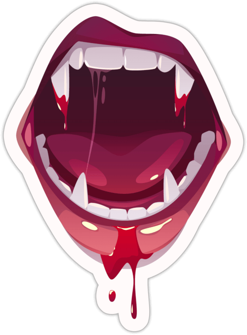
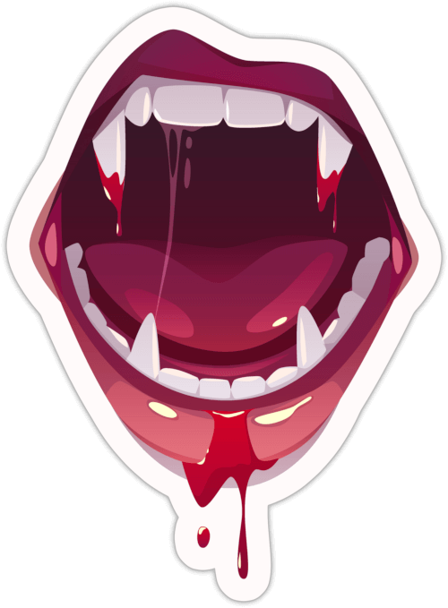
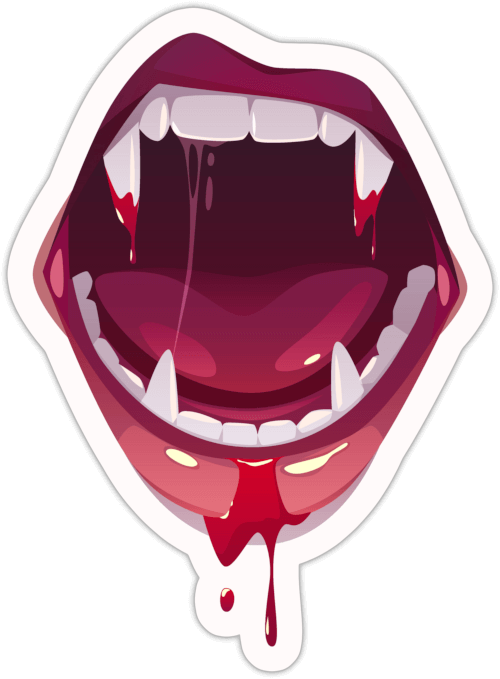
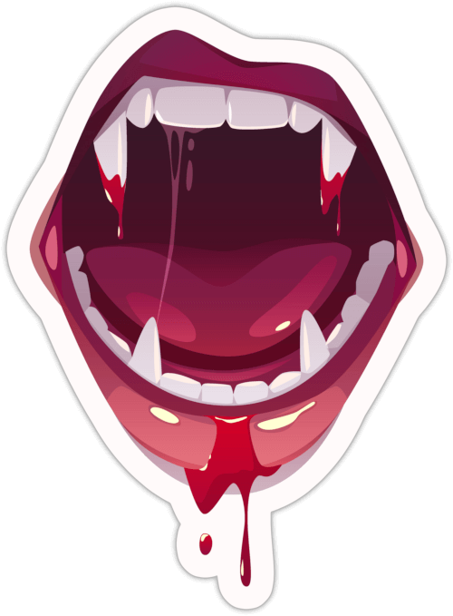

Guía de Cazavampiros para niñas molonas
Por Berta de Cantaverno
 

 


Fecha estimada de publicación: Primer trimestre de 2025
Versión: BETA 0.8.1
Páginas:
Palabras:
La presente obra se encuentra bajo la licencia Creative Commons Atribución 4.0 Internacional (CC BY 4.0) (https://creativecommons.org/licenses/by/4.0/deed.es). Puedes usar este contenido en cualquier forma que te permita la licencia incluso comercial, siempre que incluyas el siguiente texto de atribución:
Este trabajo está basado en la ambientación para FATE Guía de Cazavampiros para niñas molonas creada por Jorge Monclús Fernández (@Gwannon) y está disponible de forma gratuita en https://cazavampiros.gwannon.com/ y el código original puede obtenerse en https://github.com/gwannon/ideasRoleras/tree/main/GuiaDeCazaVampirosParaNinasMolonas. Está licenciada para nuestro uso bajo una licencia Creative Commons Atribución 4.0 Internacional cuyo texto legal puede verse en https://creativecommons.org/licenses/by/4.0/legalcode.es.

This work is based on Fate Core System and Fate Accelerated Edition (found at https://www.faterpg.com/), products of Evil Hat Productions, LLC, developed, authored, and edited by Leonard Balsera, Brian Engard, Jeremy Keller, Ryan Macklin, Mike Olson, Clark Valentine, Amanda Valentine, Fred Hicks, and Rob Donoghue, and licensed for our use under the Creative Commons Attribution 3.0 Unported license(https://creativecommons.org/licenses/by/3.0/).
Fate™ is a trademark of Evil Hat Productions, LLC. The Powered by Fate logo is © Evil Hat Productions, LLC and is used with permission.
En este libro que tienes en tus manos te enseñaré como detectar vampiros, encontrar su guarida y matarlos a tiempo de volver a casa para cenar y hacer tu directo de Twitch.
Si han empezado a pasar cosas en tu barrio como desapariciones sin explicación, ataques de animales extraños, robos en bancos de sangre, … estate segura de que son malditos vampiros.
Y hazme caso, necesitas este cuaderno si quieres salir viva y llegar al instituto.
AVISO: Este juego es sobre niñas que cazan vampiros, pero no es para menores. Tiene temas adultos, drogas, situaciones duras y violencia en la que se verán enredados menores, así que deberías avisar a tu mesa de lo que se va a encontrar durante las partidas. Los vampiros, nosferatus, chupasangres, sanguijuelas, … han estado desde siempre entre nosotros. Y siempre tienen un plan de dominación.
Ahora veamos como son, de donde vienen y lo que es más importantes como devolverlos al infierno del que salieron reptando.
Pues tras muchos meses de estudio no he podido encontrar una respuesta clara. Hay tantas teorías como podcasts de fenómenos extraños y hacedme caso que hay muchos podcasts.
Estas son las que veo más probables:

Si tienes tu propia teoría mándame un MD explicándomela, igual estamos ante la verdad.
De normal son guapos a rabiar en lo que he denominado su forma Crush. Son seductores, tienen voz de K-Poper y se mueven también como ellos. Puedes de cualquier forma no hay un patrón, pero siempre están más pálidos de lo normal y no suelen tener casi bello corporal y es fácil detectarlo, porque son muy dados a enseñar cacho.
Pero en su forma real, denominada forma Trash, son feos a rabiar. Su piel es gomosa, sus ojos saltones y demasiado juntos y sus dedos alargados y ganchudos. Van encorvados y no paran de moverse.
De normal van en su forma Crush, pero el Trash sale cuando sienten miedo, son heridos o se cabrean mucho.
Odian esta forma y si bien son más poderosos a nivel físico, también son más tontos y se les puede engañar más fácilmente. Además, sus poderes de Crush desaparecen.
Pueden tener muchas formas, altos, bajos, mazados, fibrosos, rubios, morenos, rapados (que no calvos). La realidad es que pueden ser de cualquier forma, desde ligeros y ágiles cantantes pop a poderosas amazonas racializadas.

Los vampiros beben exclusivamente sangre fresca de humanos. No toleran otros tipos de sangre y no debe haber pasado más de 12 horas de su extracción. Con lo que tampoco les vale toda la sangre que hay en un banco, solo la recién extraída.
Un nosferatu medio, si está asentado y no tiene problemas, suele beber sangre unas tres veces a la semana. Pero en casos de necesidad puede subsistir con una vez a la semana, pero pasará mucha sed, hambre, … lo que sea. Normalmente, cuando están hambrientos no pueden acceder a su forma Crush, se guían más por sus instintos y la forma Trash sale a la luz todo el rato.
El proceso de alimentación no suele ser rápido y necesitan un par de minutos mientras chupan a su víctima hasta quedarse llenos. La ventaja es que son tremendamente vulnerables en esta situación, con lo que es un buen momento para atacar.
Son muy buenos ocultando sus mordiscos en público y la verdad que pueden parecer un par de amantes enrollándose. Por lo menos yo, gracias a la profa de Educación sexual, puede distinguir un rollo de un vampiro dándose un festín.
Las víctimas de un vampiro pueden ser de cualquier tipo y condición, sobre todo cuando están hambrientos, pero en general su ego les lleva a escoger a aquellas víctimas masculinas y femeninas muy guapas y fit.
Es un rollo marichulo de «soy un alfa» y mis bros no me pueden ver con una víctima que sea menos que yo. No os podéis imaginar la de vampiro que hay adictos a los vídeos de ShitTubers como el Llados.
Una víctima de vampirismo suele presentar unos síntomas básicos muy parecidos a una gripe chunga, debilidad general, mal color, falta de apetito, vómitos y algunas veces diarrea.
Si la víctima no se aleja del vampiro, yéndose, por ejemplo, a otra ciudad, o el vampiro muere (cosas de la que tú deberías encargarte), terminará muriendo por alguna enfermedad común agravada por su anemia vampírica.
Si muere, el vampiro o sus sirvientes se encargarán de dejar pruebas que expliquen su muerte, desde drogas escondidas en su cuarto a pruebas de una TCA. Son extremadamente creativos en esta mierda y sé que disfrutan mucho con esta parte. ¡¡¡¡PUTOS VAMPIROS!!!!
Los vampiros suelen morder en cuello y muñecas, por lo que deberías buscar principalmente en esos sitios marcas de mordiscos. Las muñequeras de pinchos y los chokers de cuero son una buena protección, porque cubren esas 2 zonas.
Sabiendo todo lo anterior es fácil deducir que sus territorios predilectos de caza son discotecas, salas de conciertos y gimnasios de alto standing. No te fíes de monitores de gimnasio y de camareros de disco, suelen ser sirvientes. Aun así no te confíes, cualquiera puede ser un vampiro y su territorio de caza ser desde un centro comercial a un parque infantil donde seduce a padres y madres solteros y divorciados haciéndose pasar por otra desdichada alma solitaria.
Si es lo suficientemente rico y poderoso, deja de cazar y simplemente espera en su mansión a sus sirvientes le traigan víctimas que desangrar. Aun así cada cierto tiempo, sienten la necesidad de salir a cazar solos. Les gusta la emoción de la caza y perseguir a su presa. Ese es un buen momento para acabar con las sanguijuelas que están más protegidas.
Puedes, otra cosa es que debas. Beber sangre de vampiro te da superpoderes a lo Capitana Marvel, eres más fuerte, más rápida, más resistente y puedes flotar. El efecto dura unos minutos donde te sientes la leche.
El problema es que después te deja muy doblada. Y tras unos minutos terminas devolviendo toda la sangre tomada y vuelves a estar normal. Ya os digo que esa vomitona es de lo peor que puede pasarte.
No lo tengo estudiado (es puto desagradable andar haciendo pruebas), pero seguramente habrá sangres de vampiro más poderosas que otras.
Hay una serie de creencias populares sobre los vampiros que he podido que no son verdad o por lo menos he podido comprobar que las hagan.
La imagen clásica del vampiro en un ataúd con tierra de su país de origen está bastante alejada de la realidad. No necesitan ninguna de esas cosas, solo un sitio seguro y donde no entre la luz del sol. Puedes dormir en una cama supergótica con doseles y cortinajes supergruesos o dentro de una compleja caja metálica anti-cazavampiros en una habitación del pánico. En caso de necesidad, colgando bocabajo de la viga de un desván o arrebujados en un conducto de ventilación de un garaje subterráneo.
Principalmente, duermen cerca de sus territorios de caza, muchas veces incluso en el propio territorio. Si caza en una disco de su propiedad, tienen montado en el local un despacho donde duermen, o quizás tengan una tienda alquilada en eternas reformas en el centro comercial por donde se mueven.
Sea como sea, la amenaza de la luz del sol, les hace que no se alejen mucho de sus refugios y el hecho que durante el día sean vulnerables hace que sean muy cuidadosos a la hora de volver a sus guaridas, extremando las precauciones y vigilando que nadie les siga.

El alcantarillado es el salvavidas más común para estas criaturas. Cuando el amanecer les pilla lejos de su guarida, suelen recurrir a las alcantarillas. Suelen moverse por ellas hasta llegar a un colector donde buscará algún hueco o conducto donde esconderse para pasar el día.
Un buen mapa de las alcantarillas de tu barrio con sus colectores principales y como llegar a ellos es muy muy muy muy útil.
Suelo sacar fotos de las alcantarillas y si cuando busco a una sanguijuela detecto que una alcantarilla está movida ya sé por donde ha intentado escapar. No es un método perfecto porque hay gente que las revisa y las mueve, pero es bastante efectivo.
No es la primera vez que usan pisos turísticos como guaridas temporales o permanentes. Lo primordial es que no necesitan ser invitados porque no son el hogar de nadie. Se contratan por internet y la mayoría de las veces ni aparece el dueño a abrirte. Entra y sale mucha gente variada a horas raras, el ruido y los gritos son normales, así que son tapaderas perfectas para sus actividades.

Siempre que puedas, jode las casetillas con las llaves. La silicona es barata y funciona de miedo. Cuantos menos pisos turísticos en el barrio, más seguro será.
Las guaridas de los vampiros, salvo extrañas excepciones, son tan grandes, lujosas y seguras como el nivel del chupasangre. Más nivel, más espacio, lujo y seguridad. Así que un vampiro newbie puede tener un pequeño recinto asegurado y un Lord vampiro tendrá un ático que es casi una fortaleza con seguridad armada y sistemas de vigilancia de última generación.
Aun así, hay una serie de aspectos que hasta el vampiro más cutre tiene en sus guaridas.
A partir de ahí puedes meter lo que quieras, habitación de invitados, celdas, diferentes salas de diversión, quirófanos, … lo que tu imaginación se le pueda ocurrir.
Pasarte por las obras de los pisos como los jubilados y dar un vistazo a las licencias de obra que deben exponer públicamente pueden darte pistas de lo que están haciendo y detectar guaridas vampíricas.
La verdad que para ser seres inmortales y superpoderosos, los vampiros tienen muchas debilidades muy estúpidas que debes aprender a aprovechar si quieres durar muchos años como cazadora.
La tradición marca que un vampiro muere si su corazón es atravesado por una estaca de madera y es totalmente cierto.
Lo que pasa es que es algo muy complicado, debe estar dormido o inmovilizado para hacerlo. Bueno, si cae sobre una valla de madera igual alguna de las tablas atraviesa su corazón. Sea como sea, es una medida bastante fiable de que no volverá a molestar.

La combinación estaca en el corazón + cortar cabeza es lo más afectivo. De ahí sí que retorna ninguno. El problema es que cortar un cuello es muy difícil con el cuchillo jamonero.
Quemar el cuerpo después de estarlo puede funcionar, pero se montan unos fuegos artificiales muy chungos.
Os recuerdo que puedes comprar estacas en Amazon y estarán mañana en casa, pero si puedes, COMPRA EN LOCAL :)
El ajo no solo repele a los chupasangres, el contacto les hace daño y puede ser mortal si consigues que lo ingieran. Métele una cabeza de ajo en la boca y verás fuegos artificiales de sesos de sanguijuela.
El ajo picado o en polvo son igual de efectivos que las cabezas de ajo y es mucho más práctico. Pero por experiencia te diré que el pan con ajo del Telepi ni lo huelen.
Mi mayor descubrimiento en mi carrera de cazavampiros es el té de ajo. Esta infusión de ajo es capaz de dañar a los vampiros como si fuera agua bendita o fuego.
La receta es simple, una cabeza de ajo por cada 2 litros de agua y ponerlo al 5 durante 1 hora. Esto te deja un 1 litro de té de ajo preparado para meter en bombas o pistolas de agua.
El fuego también es mortal, pero la verdad es bastante ingobernable y puedes acabar quemando todo el barrio. Y encima luego viene la policía a investigar el incendio.
Lo bueno es que conseguir fuego es fácil, un mechero y gasofa y tienes fuego.
En serio, úsalo como último recurso.
La luz del día es mortal para estas sanguijuelas. Unos pocos segundos expuestos a la luz solar y se convierte en cenizas. Así que tus operaciones deberían ser de día, cuando duermen y son más débiles.
Siempre que te muevas por una de sus guaridas trata de abrir ventanas, quitar papeles de los cristales y descorrer cortinas (cómo les gustan los cortinones de abuela). Cuanta más luz entre, más seguro será para ti.
Las linternas UV (ultravioletas) que todos conocemos como luz negra funcionan de lujo y dañan a los vampiros, pero no son tan mortales como la luz del sol. Puedes quedar de rarita llevando una en la mochila, pero es que además de dañar a los vampiros, puedes usarlas para detectar fluidos como sangre.
.jpg "Cuatro modelos de pililla benditera o aguabenditeras de loza popular española.")
El agua bendita es igual de efectiva que el ajo y encima es fácil de conseguir. Entras en la parroquia de San Julián sin que te vea el padre Ambongo y metes la botella de agua en la fuente de la entrada o en donde bañan a los bebes.
El problema del agua bendita es que el sacerdote que la bendiga debe creer y tener fe y, por tanto, puede pasarte que la lances al nosferatu y no tenga efecto porque el cura es un falso. Si encuentras una iglesia con agua bendita real, tienes un tesoro porque son muy raras.
Los objetos dañados en plata dañan a los vampiros, da igual que sea un cuchillo para mantequilla, que un anillo, que la tetera de tu tata. Si es de plata puede hacerles daño.
Les hace grandes heridas y mucho dolor y normalmente se acobardan bastante si tienen una buena provisión de plata, porque el simple roce es muy peligroso para ellos.

Tengo la teoría que cuanto más vieja más efectiva es la plata, así que comprar monedas de plata en el rastro no es mala opción. Cómprate un álbum de monedas y mételas dentro y tus padres estarán contentísimos.
Las balas de plata serían realmente útiles, pero las menores no tenemos acceso a este material. Por eso, estas vacaciones, igual, tengo tiempo de probar con un tirachinas con cuentas de plata. Seguro que si impacto en la cabeza de unos chupasangres, le dejo inconsciente lo suficiente para trincharle el corazón con una estaca.
Las cosas bañadas en plata son tan útiles como si fueran de plata y ¡¡¡¡¡MUCHO MÁS BARATAS!!!!!
Las películas viejas de los abus, esas que son como de cine, están hechas de plata y son geniales para inmovilizar vampiros, son como las bridas que usa la policía para detener mucha gente en las manifas.
La experiencia me ha ayudado a descubrir cosas que funcionan y no funcionan con los chupasangres.
Los vampiros y los planes siempre van unidos, es parte de su naturaleza inmortal.
Primero porque lo ven a largo plazo y los planes largos y complicados con muchos pasos se ajustan a esa visión a largo plazo.
Segundo, porque esa inmortalidad les aburre y necesitan un juguete complicado y largo que les dure tiempo.
Vamos, como diría mi abu: Las manos ociosas son el taller del diablo.
Si te encuentras un vampiro, estaré segura de que está planeando o ejecutando un plan. En cuanto terminan un plan empiezan con otro, ni los disfrutan.
Para entender los planes de los vampiros debemos entender primero su sociedad. Cuando hablo así parezco mi profa de Sociales.
Los vampiros tienen una estructura social basada en su poder y antigüedad. Estando los newbies o más débiles abajo y arriba el Lord Vampiro, con un par de niveles intermedios.
Los de arriba mandan sobre los de abajo y los de abajo cuando pueden acaban con el de arriba y toman su sitio. Aquí nadie se jubila y se va a vivir a la playa LOL así que la única forma de ascender es cargándote a tu jefe (uno de los sueños de mi madre).
¿Puedes asociarte con un vampiro para cargarte a otro? Puedes, pero ten claro que la siguiente en su lista serás tú.
¿Intentarán comerte el tarro para que los dejes vivos y vayas a por su jefe? Lo intentarán siempre y no te extrañe que dejen pistas falsas que lleven a otro vampiro al que quieren cargarse.

Los planes vampiros son como sus creadores, así que los planes vampíricos tienen muchos niveles con grandes planes que tienen subplanes más pequeños y así hasta planes minúsculos.
Lo interesante de los planes vampiros es que no siempre tienes que ir hacia arriba, puedes ir hacia los lados. Incluso puedes volver a empezar desde abajo. Pero mejor lo vemos con un ejemplo.
Tu madre empieza a tener problemas en el trabajo por los constantes cambios de cita para la diálisis de tu abu. Descubres que es uno de los funcionarios que pone las citas. Esto sería un plan menor.
Según tiras del hilo, oh sorpresa, descubres que trabaja para un vampiro novato al que le han encargado cargarse el centro de salud donde va tu abu. Esto es un plan inferior.
Al acabar con el vampiro encuentras mensajes de un señor X que le daba las órdenes (plan medio) y de otro vampiro noob que estaba desmantelando la casa de cultura, otro plan inferior.
En ese momento, puede ir hacia arriba e investigar el plan medio y al señor X. También puedes investigar el plan inferior y tratar de salvar la casa de cultura. En este caso igual tienes que empezar investigando los planes menores que se ejecutan en la casa de cultura.
Subir a un nivel superior de plan o explorar otros del mismo nivel pueden ser igual de útiles y eficaces. Si vas a por el señor X y su plan medio, está bien porque ascendientes hacia el gran plan y si acabas con todos sus planes inferiores, seguramente él vendrá a por ti.
| Plan | Quién lo controla |
|---|---|
| Gran plan | Lord Vampiro |
| Plan medio | Vampiro oldie |
| Plan inferior | Vampiro noob |
| Plan menor | Siervo |
También puedes pasar que tengas que volver a un plan menor porque afecta a tu entorno directo, como que cierran el taller donde curra tu hermano para poner una casa de apuestas. En este caso tendrás dos tramas de planes a seguir que seguramente llevarán al mismo Lord Vampiro.
Has de ser rápida al desmantelar planes porque pueden volver a aparecer o cambiar de forma en poco tiempo, sobre todo si el vampiro te descubre y/o escapa a tu caza.
Otro elemento importante de los planes de los chupasangres es que son muy mundanos, tremendamente mundanos. Nada de plagas de zombis, rayos vampirizante o control mental en tu serie favorita.
Son más convertir tu ciudad en una mierda, donde nadie se preocupa de nadie y todos tienen miedo de todos. Es ahí donde sus actos ni son detectados ni son perseguidos y donde viven como reyes.
Necesitan tanto el poder como la sangre y por eso sus planes deben influir en muchas personas. Ver a tanta gente bajo el poder de sus planes les encanta, les excita mejor dicho.
Piénsalo así, lo normal un vampiro habría acumulado millones de € a lo largo de los años con sus poderes y tendría a un par de siervos invirtiendo en bolsa. Seguramente se habría comprado una isla y haría traer a víctimas para bebérselas.
Pero no, un vampiro tiene que cargarse las infraestructuras sociales de un barrio para que la gente del barrio se vaya, luego gentrificarlo y llenarlo de pisos turísticos y bares de borrachera para poder beber de ingleses y alemanes borrachos que volverán a su país con una anemia brutal. Necesita que haya miles de vidas jodidas para estar satisfechos.
La forma de frustrar sus planes es avanzar poco a poco hasta llegar a su cima y al Lord Vampiro o socavarlo desde abajo para que el Lord Vampiro salga a la luz cuando su castillo de naipes empiece a caerse.
Debes ser rápida porque los planes como los vampiros regeneran y, en pocas semanas, el plan desbaratado ha respawneado con una nueva skin.
Frustrar planes grandes o pequeños no implica acaban con el enemigo que lo llevaba a cabo, implica muchas veces sanar y fortalecer esa parte del barrio y conseguir unos aliados que te ayuden cuando subas de nivel en la estructura de planes y los enemigos sean más poderosos.
Por ejemplo, evitar que se cierre un centro de salud, puede granjearte la amistad de la jefa del laboratorio, que seguramente hará pruebas y análisis a las muestras que envía el anónimo salvador de su centro.
Recuerda que sus planes suelen ser muy mundanos y muchas veces basados en minar las estructuras sociales de ayuda, así que apoyar a los diferentes grupos que trabajan día para mejorar tu ciudad es una forma de prevención contra las actividades de los vampiros. Ir un día a trabajar al huerto urbano de tu barrio, hacer carteles contra una protesta por la tala de árboles en el parque o servir comida en el comedor social son formas también de luchar contra los vampiros.
Como ya hemos aclarado, detrás de todo gran plan vampírico siempre hay un vampiro muy viejo, un Lord, una Lady o une Liege (gracias Macarena por esas horas de lenguaje inclusivo en clase de Lengua, a pesar de lo que dijo el director).
De hecho, normalmente son Lieges Vampires, cuando eres tan mayor lo de la sexualidad fluida es bastante factible. Si queréis putomosquear a un vampiro-machito-alfa el Liege funciona. El resto se giran y le dan un morreo a la primera víctima/sirviente que pillan.

Los grandes planes tienen una cosa muy importante que nunca debes olvidar, son como sus creadores. Si el Lord Vampiro es maquiavélico, los planes serán maquiavélicos con muchas intrigas y traiciones. Si el Lord es sanguinario, muchos obstáculos se arreglarán con violencia, tortura y asesinatos. Si el Lord es un depravado, habrá todo tipo de drogas, parafilias sexuales, juego, … y participarán los personajes más cripis que puedas imaginar.
Una vez que sepas quién es el creador del gran plan, te será mucho más fácil deducir los diferentes elementos de cada subplan, porque al final van a tener el sello de marca del gran arquitecto que ha estructurado todo.
Otro punto importante de los grandes planes es que una de sus funciones principales es alimentar el inmenso ego de su creador. Si el plan avanza bien, el ego del Lord crece, pero, si empieza a fallar, su ego se desinfla y dejan de actuar racionalmente y su ego dañado toma el control
Que su gran plan falle es malo para el ego de un Lord Vampiro. Que falle porque 4 niñas con pistolas de agua están haciendo el trabajo que deberían haber hecho policías e investigadores adultos, es un golpe mortal en su orgullo propio. Con el ego herido, un vampiro puede empezar a hacer actos sin mucho sentido y dar palos de ciego, pero se mueve mucho más agresivo y menos cauto.
No solo debes acabar con los vampiros y frustrar sus planes, es importante salir viva y a poder sin recibir daño. Es por ello que debes saber como defenderte de esas malditas sanguijuelas.
Una buena ristra de ajos alrededor del cuello te da bastante protección, pero si están muy enfadados o hambrientos no les detendrá.
Tampoco sirve de nada con los sirvientes a los que no les afecta el ajo.
No compres grandes cantidades de ajos en supers o por internet. Vigilan todas esas compras. La tienda de encurtidos de tu calle es mucho mejor. Así que como digo siempre COMPRA LOCAL.
Los vampiros no se reflejan en los espejos, pero solo en los viejos que debían tener algo de plata. Los modernos tienen aluminio y en esos se reflejan.
Eso convierte a estos viejos espejos de plata en los perfectos detectores de vampiros, sobre todo cuando en su modo Crush.
Una visita a la casa de tus abuelos en el pueblo, al rastro o una antiquaría y puedes conseguir un espejo eficaz. Yo uso uno con mango y baño de plata por si tengo que golpear con él.
Si se rompen los trozos de cristal, estos tienen plata y pueden usarse como arma.
Las sanguijuelas no pueden entrar en una casa si no son invitados, así que mi regla fundamental es no invitar a nadie a entrar. El problema es que tu familia no lo tiene en cuenta, así que siempre soy la primera en abrir la puerta de casa. Así el tonto de mi hermano no invita a entrar a quien no debe.
La invitación es personal, así que solo le vale al vampiro al que se la diste, ni sus siervos ni su Lord están cubiertos en esa invitación
Si el vampiro rompe en tu casa las leyes de hospitalidad se puede revocar la invitación, pero vamos es difícil revocar algo si primero te han roto el cuello.
Puedes pensar que las MMA, el Brazilian Jiujitsu y mierdas similares te vendrán bien en tu batalla contra los chupasangres, pero no merecen la pena. No tienes ni el tiempo, ni el peso, ni la fuerza para ser un peligro. Además, los gimbros se reirán de ti.
Mi consejo es que aprendas autodefensa personal con el grupo feminista de tu barrio. Lo que te enseñen esas reinas será mucho más útil para alguien de nuestro tamaño que lo te puedan enseñar los kungfu-bros del gimnasio.
La forma más eficiente de no caer bajo el influjo de la mirada hipnótica de un vampiro es no mirarles a los ojos. Pero como es complicado muchas veces para matarlos, unas gafas de sol pueden ayudar.
Aparte, quedas muy fachera y recuerda que el estilo está por encima de la sustance.
TUS AMIGAS. No hay más.
Se defiende de nosotras de dos formas bien diferenciadas. Primero descrédito social y si eso falla pasan a lo físico.
Mientras te muevas en la periferia de sus actividades, usarán todo su arsenal social para desacreditarte y aislarte, pudiendo llegar a desquiciarte y acabar en un psiquiátrico si no tienes una mente preparada.
Veamos algunas tácticas:
La mejor defensa que tienes son tus socias y amigas. Ellas serán tu escudo contra toda la mierda que puede echarte encima. No digo que sea fácil con amigas, digo que sin su apoyo casi seguro sucumbes a sus ataques.
La ventaja de esos ataques sociales es que muchos son hilos desde los que tirar. Si te quitan la ayuda del comedor, puedes ir subiendo por la empinada cuesta de la burocracia hasta dar con el siervo que te ha hecho la putada y de él llegar al Lord Vampiro.
Cuando empiezas a adentrarte en sus planes desbaratándolos y dándole problemas, es decir, cuando empiezas a truncar sus planes medios, suelen pasar al plano físico y periódicamente pueden enviar a alguien para acabar contigo.
Una cosa buena que tiene la naturaleza depredadora del vampiro es que cuando tiene una víctima y se pone en plan físico, se olvida del resto. En ese momento se olvida de tu familia, amigos, … Quieres hacerte daño a ti y solo a ti.
Si has seguido las normas estás bien protegida y preparada y tienes un grupo de sistars que te apoya, así que si mandan sirvientes humanos no son tan poderosos como para no poder derrotarlos o escapar de ellos. Si mandan vampiros, tu casa debería ser impenetrable y fuera de ella tienes armas para defenderte.
Siempre que sea posible un chupasangre no se
manchará las manos de sangreno intervendrá directamente en combates, eso supone muchas veces pasar a su forma Trash y lo odian, además se ven como pensadores maquiavélicos, no picadoras de carne.
Casi siempre tratan de trabajar a través de sus chupones o de los vampiros que están por debajo de ellos. No les gusta meter gente de fuera.
Podéis pensar que podrían contratar a un grupo de supermercenarios para acabar con tu panda de cazadoras, cuando empiezas a desbaratar su plan, pero piensa que eres una niña de 12 años. Sería raro contratar a un mercenario checheno para que ejecute a un grupo de niñas de 12 años. Estos encargos provocan muchas preguntas. Además, que aparezcan 4 cadáveres de 4 niñas de un barrio, puede hacer que el barrio entero se levante y luche por él y eso es lo último que quiere el Lord.
Un gran vampiro solo recurrirá a fuerzas especiales cuando su status se vea altamente en peligro, hasta ese momento tratarán de llevar todo a modo local.
Los siervos, ghouls, thralls, renfields son diferentes nombres a través del tiempo y las tradiciones de lo que yo llamo chupones.
Los chupones son humanos que sirven a los vampiros, bien como herramientas de sus planes, bien como sirvientes o protectores.
El vampiro suele darle pequeñas dosis de su sangre para engancharles al subidón y que la resaca de después cada vez sea mejor. Si deja de recibir su dosis, volverá tras un mono brutal a la normalidad.
Por eso cuando te enfrentes a un chupón deberías usar fuerza no letal. Al final muchas veces son víctimas del sistema y la gran mayoría pueden ser rehabilitadas. Solo unos pocos escogieron su depravado y cripi destino y buscarán otro maestro si no tienen uno.
Muchos sirvientes empezaron siendo víctimas. La mayoría de las veces, mientras las vigilaba y/o seducía, el vampiro vio cosas que le eran útil y paso de alimentarse de ella a convertirla en su sirviente.
No hay un patrón fijo para los chupones, pueden ser de cualquier estrato social, tener cualquier físico, cualquier profesión y cualquier ideología. Cualquiera puede acabar siendo un siervo de vampiro. Son un poco como las sectas, un momento de bajón y te enganchan.
Podemos hablar de 3 tipos de chupones, los que ejecutan sus planes, los que les sirven y los que les protegen.
En vampiros novatos que pueden mantener pocos siervos estos tres tipos se pueden solapar. Un Lord Vampiro tendrá varios siervos por cada tipo.
Estos chupones se dedican a llevar a cabo los planes vampíricos. Muchas veces ni saben que son forma de un plan, ni que trabajan para los chupasangres. Igual simplemente reciben órdenes por Telegram y Bizums con la pasta por su trabajo.
Otros, sin embargo, son adictos a su vampiro o incluso son parte fundamental de plan como políticos de la ciudad, altos funcionarios y banqueros.
Su vida está dedicada a servir a su amo vampiro al que casi siempre están enganchados. Limpian su guarida, cumplen sus caprichos y sobre todo se encargan de proporcionarles alimentación.
Eso supone buscar a las víctimas preferidas de su amo y engañarlas para llevarlas ante su amo para que se alimente de ellas y luego limpiar todo y eliminar pruebas.
Si la sanguijuela es más de cazar por sí solo, le ayuda en la caza, aislando a la víctima de sus amistades, emborrachándola, … Luego se encargará de llevarla a casa o en casos extremos deshacerse del cuerpo sin dejar pruebas.
La verdad que algunas veces los vampiros se vuelven tan dependientes de sus sirvientes que se convierten en unos inútiles que se mueren solos si les alejas de su servidumbre.
Son protectores, pero también funcionan como fuerza de choque. Hablamos de gimbros que se ponían hasta arriba de anabolizantes y que ahora se dopan con sangre de vampiro. No son un portento de las peleas, pero tienen fuerza y aguante y han aprendido cosillas de boxeo y MMA.
La verdad que lo mejor es engañarlos, es muchísimo más fácil que enfrentarse con ellos físicamente. De todas formas, como nos enseñó Mónica del punto morado del barrio, todos caen, si aciertas en los pendientes reales.
Pues estás jodida y no hay mucho que hacer. Tus sistars deberían darte una muerte digna para recordarte cuando todavía no eras una asquerosa sanguijuela asesina.
Si estás sola, antes de caer, búscate un final que esos cabrones no olviden jamás. Si vas a caer, que no sea sola.
Para acabar convertida en un vampiro es importante saber cómo es ese proceso.
Lo primero es estar al borde de la muerte, más allá que acá. Puede ser porque te hayan chupado la sangre o por culpa de las heridas del combate.
En ese momento, el vampiro puede decidir darte de beber de su sangre.
Un cuerpo humano que bebe sangre vampírica la combate y la termina expulsando, de ahí la gran vomitona al de un rato de beberla. Pero si tu cuerpo está muy débil, no puede combatirla y está termina apoderándose de ti.
En ese momento el proceso ya es irreversible, pero todavía no eres un vampiro, solo eres medio vampiro. Según pases los días, la sangre de vampiro irá poco a poco tomando el control de ti hasta que te obligue a beber sangre fresca. En ese momento ya eres un vampiro completo con todas sus fortalezas y debilidades.
Normalmente, la primera vez que te alimentas suele ser un fiestón de sangre y miembros desmembrados, así que los casos de asesinatos más brutales suelen estar relacionados con vampiros noobs, aunque los medios traten de taparlo achacándolo a otras cosas.
Aquí tienes algunos libros, pelis y podcasts que te pueden dar más información. Ninguno tiene toda la verdad, pero cogiendo cositas de uno de ellos puedes tener una visión bastante cercana a la realidad.
Este listado es abierto. Si conoces algún buen libro o peli, mándamelo a mis redes y miraré de meterlo.
Saber cuáles son tus puntos fuertes y débiles como cazadora de vampiros te ayuda a saber qué puedes hacer y qué no y a que puedes enfrentarte y a que no.
Salvo contadas excepciones, como Sara de mi clase, con 12 años no eres muy fuertes con lo que no deberíamos tener un estilo Vigoroso a nivel Grande y si Bueno solo en casos muy especiales.
Uno de tus tres aspectos secundarios debería ser Soy una niña, que refleja no tienes ni 12 años. Eso supone, entre otras muchas cosas, que no eres ni muy fuerte, ni muy alta, ni corres muy deprisa, pero puedes esconderte más fácilmente y meterte en sitios donde no entran los adultos.
Un aspecto definitorio de ti como tu joven cazavampiros es como te buscas la vida en el barrio. Todo esto no solo va a marcar tu forma de vida, sino también tu ética y tu relación con la ley.
Pides la paga: Pides a tus padres la paga todas las semanas. Es menos dinero que el resto de formas, pero es dinero muy fácil.
Haciendo recados: Te dedicas a hacer recados por una propina. Cargas con paquetes, llevas mensajes, etc. siempre corriendo arriba y abajo de las calles y callejuelas.
Cuidando animales: Te dedicas a vigilar y cuidar de mascotas por una pequeña propina.
Robando: Entras en los supermercados y robas cosas que luego revendes a tu panda o a adultos o tal vez tengas habilidades de carterista.
Mendigando: Mendigas por las calles apelando a la buena fe y caridad de sus gentes. Puede que tengas una discapacidad o solo lo finjas, pero desde luego has aprendido a fingir pena para aflojar la pasta de los viandantes.
Trabajo en el negocio familiar. Quizás repongas latas en el badulaque de tus padres o recojas mesas en el restaurante de tu abuela. Y todos los findes recibes una propinilla.
Artista callejero: Te dedicas a hacer malabarismos, a cantar, a bailar, a recitar poesía, etc. por unas monedas.
Buscando en la basura: Vives de lo que encuentras en la basura y los vertederos. Las cosas buenas las vendes y las útiles te las quedas.
Alguno de los aspectos de una cazadora podría estar relacionado con su forma de ganarse la vida. Si la forma de ganarse la vida de alguien de tu mesa no se ajusta a ninguna de estas opciones, puedes evaluarla y decidir si la permites, pero no deberías aceptar aquellas que vayan en contra de los derechos de la infancia como prostitución infantil.Quizás definir en que eres buena en el colegio te sirva para establecer otro de tus aspectos secundarios.
Ser buena en matemáticas puede ayudarte a revisar un libro de cuentas y encontrar en que gastan los vampiros su dinero, mientras que ser una máquina en Lengua te permita entender y descifrar el código secreto que usan las sanguijuelas para encriptar sus mensajes.
Los apodos son importantes en el barrio, para bien o para mal te definen y tienen aspectos sociales y de cómo te perciben el resto de vecinos. Es por eso que cuando te pongan un apodo tus amigas debe ser por algo grande y espectacular.
Hay un montón de cosas útiles cuando cazas vampiros, pero normalmente pocas puedes comprarlas con tu semanada. Así que has de aprovechar cumpleaños y Navidades para pedirlos.
No puedes pedir cualquier cosa (sueño con unas gafas de visión nocturna) porque no son cosas de niñas (mimimimi), así que aquí tienes cosas que puedes pedir que te regalen y no levantan sospechas en los adultos.
Si compras online usa siempre puntos de recogida, mejor si son esos armarios metálicos en los que metes códigos larguísimos. Será más difícil rastrear un pedido extraño hasta tu casa.
Benditas pistolas de agua cargadas de té de ajo o de agua bendita!!! Son tu arma más poderosa, además de tu cerebro, contra los vampiros. Encima, cientos de personas de todo el mundo gastan un estúpido número de horas en mejorarlas y hacen tutoriales de ello :)
Hay cientos de vídeos explicando como hacer más efectiva tus pistolas, rifles y cañones de agua sin saber que han ayudado a parar la plaga vampírica que amenaza nuestros barrios y ciudades.
Puedes pillarte algo normalito durante todo el año, pero en cuanto llega el verano y las tiendas de juguetes se llenan de flotadores, colchonetas y churros de piscina, coge uno de sus catálogos y disfruta pensando cuál vas a comprarte para tu próxima misión.
La versión vampírica de las granadas. Estos 2 céntimos de plástico son devastadores en esos asquerosos bichejos si consigues impactarles. El problema es que son grandes y pesados y bastante frágiles.
Si eres lista y hábil, sabrás adaptar tu pistola de agua para recargarla con globos de agua y buscarás la forma llevar un globo con el agua de tu pistola.
Esta tecnología retro, como dice mi tío, es la leche. Con 12 años o menos es complicado tener un móvil, pero es fácil tener unos walkie-talkies para comunicarte con tus si★s. No deja registros, no es hackeable, funciona en sitios donde no hay cobertura de móvil, las baterías duran un montón, … todo son ventajas.
Si solucionarán lo del cambio y corto (mi tío se puso muy pesado con eso cuando me enseño a usarlo) serían la leche. Pero vamos Es de las primeras cosas que debes conseguir cuando salgas a cazar acompañada de tu panda.
Esta navaja con multitud de opciones te permite cortar, destornillar, cortar cables, abrir latas y quitar chapas, … recuerdo haber visto en Twitch una navaja de estas con sierra y otra con puntero láser.
Cuantas más opciones mejor, pero las básicas ya son muy útiles y muy escondibles y tampoco es tan raro ver una niña con una pequeña navaja multiusos.
Un par de escapadas al monte con el grupo de montaña del barrio y puedes conseguir que te compren una navaja suiza. También sirve de excusa para conseguir cuerdas, ganchos y mosquetones, … en general material de montaña.
Me puse a ver todos los programas de MasterChef Junior, a ver si conseguía que me comprarán un juego de cuchillos, pero no funciono. Quizás con unos padres menos responsables puedes conseguirlo.
Si la sacas delante de un adulto, se podrán a tararear un tema de una serie viejuner y alguno pedirá un chicle y un clip. Pase de preguntar, los boomers son raros.
Empieza a practicar un deporte de contacto y tendrás la excusa necesaria para que te compren o regalen protecciones, cascos, muñequeras, coderas, rodilleras, …
Estas protecciones no te protegen de vampiros que siempre van a tus partes blandas, pero son buenas para caídas y golpes y llegar a casa llena de rasguños y morados y no tener que dar excusas a preguntas de tus padres.

Como ya te he contado, los vampiros chupan la sangre principalmente de cuello y muñecas, así que unas protecciones de cuero con pinchos metálicos (ojalá fueran de plata las mías) son muy eficaces.
Si tu outfit es un poco alternativo, podrás llevar estos complementos sin dar mucho la nota.
En las ferias medievales tienen mucha selección, con cuero bueno y pinchos bien afilados. También puedes pedirlo como parte de un disfraz de Halloween o robárselo a tu tío, el heavy trasnochado.
Las sudaderas grandes son muy útiles sobre todo anchas. Pasas desapercibidas, ocultas tu cara con el choto y puedes llevar debajo protecciones varias como coderas. Además, sus grandes bolsillos te permiten llevar la pistola de agua sin dar el cante.
Junto al pantalón de chándal y unas deportivas es el outfit perfecto de la cazavampiros.
Aquí van una serie de consejos a la hora de jugar partidas con personajes menores de 12 años. Pero recuerda, son consejos, eres muy libre de llevarlo como tú quieras.Tu mundo es diferente al de los adultos y por eso tienes que tener algunos conceptos muy claros.
Esta premisa es básica. Las personas adultas no son tontas por sí mismas, son tontas porque nunca harán caso a un niño. Las ideas de las chicas son solo fantasías de sus cerebros sobreexcitados y no perderán un segundo en corroborarlas.
Es importante que tengas muy claro que por ese lado no tendrás la más mínima ayuda. Esto hará que si al final aparece un adulto para ayudarte sea más impactante.
Puede haber adultos que te hagan caso, pero son tan extraños y raros que el resto de adultos les tratan igual que a ti.
Para bien o para mal es un mundo de adultos, todo está pensado para esos gigantes que no escuchan.
La ropa, las armas y las herramientas son tamaño adulto. No puedes hacerte pasar por un adulto poniéndote su ropa, tendrás que subirte una encima de otra o usar zapatos altos o zancos.
Por otro lado, es más fácil librarte de grilletes o reptar por las alcantarillas cuando mides y pesas mucho menos.
Los adultos nunca te consideran una amenaza, así que hay que aprovecharse de ello. Puedes fingir llorar para que tu captor baje la guardia y cuando se gire golpearle con algo contundente.
Solo un gran número de niñas armadas y con intenciones agresivas podría ser considerado una amenaza.
Puedes entrar en sitios en los que los adultos no pueden o no se atreven, principalmente porque no eres una amenaza. Solo necesitas una buena excusa.
Vete a cualquier bar de tu barrio por chungo que sea vendiendo boletos de una rifa y podrás moverte por el bar aunque lo tengas prohibido y escuchar todas las conversaciones adultas del local.
Si intentas pedir una cerveza se reirán de ti y te echarán a la calle y quizás llamen a tus padres.
Es imposible cazar vampiros sola, necesitas a tus amigas, a tus SI★S, para que te ayuden, te den ánimos y te protejan. Y ellas también te necesitan a ti para que les ayudes, les animes y las cuides. Así pues, nunca never salgas de caza de sola, es un camino directo a la derrota.

La pandilla puede ser otra fuente importante de aspectos secundarios, quizás tengan una relación especial entre ellas o sean familia. Si algún PJ ha dejado algún aspecto sin definir puede que al principio de tus aventuras puedan rellenarlo cuando conozcan a sus sistars más a fondo.Montar tu propia banda de cazadoras de no es fácil, es cuestión de tener amigas de verdad y el momento adecuado.
Una vez que descubrí que el rollo de los vampiros y sus planes eran algo real, empecé a tantear a mis amigas. Una pijamada fue el momento perfecto para hacer las preguntas adecuadas en el momento adecuado.
Estaba acostumbrada a intentar hablarlo con adultos y siempre recibir las mismas respuestas, desde «vaya imaginación tiene esta niña» hasta «tus padres deberían consultar estos delirios con un especialista».
Sin embargo, esa noche hubo flow y empezamos a contar historias raras que habíamos visto o vivido y poco a poco la conspiración vampírica se hizo muy patente sin todavía darle nombre.
Esa misma noche montamos un Google Maps con las localizaciones de todos esos sucesos y enseguida vimos un patrón.
A esa pijamada siguieron unas cuantas más donde seguimos investigando el misterio del barrio sin darle el nombre más lógico, VAMPIROS. Hasta que en la última aparecí las pruebas que conseguí de mi primera cacería y les conté todo lo que sabía.
Esa misma noche juramos combatir el vampirismo y formamos nuestra Banda de sistars cazavampiras, hicimos nuestro reglamento y lo juramos por nuestras abuelas.
Que haya amigas íntimas que no estén entre mis sistars no quieren decir que sean menos amigas, simplemente que no están preparados para la caza. Pero son igual de válidas y tan o más amigas que mi panda. Además, son por gente como ellas, por lo que salimos de caza por las noches, protegerlas de esos horrores.
Este es el sistema que a mí me funciona con mis si★s, pero igual no es el mejor para tu grupo de cazadoras, así que tómalo más como un ejemplo que como una guía que seguir.
Al principio todo era muy caótico, cada una hacía lo que podía y quería, pero con el tiempo cada una de nosotras encontró su lugar donde hacía las cosas que le gustaban y sabía hacer bien.
Los puestos dentro del grupo de cazadoras también pueden ser origen de otros aspectos de tu personaje o por ejemplo que el aspecto de lo que «mejor se te da en clase» evolucione hacia tu puesto en la liga de cazadorasLa reina es la jefa, la capitana, la mandamás de la banda en una misión. Nosotras elegimos una reina por misión y su palabra durante la misión es sagrada. Pero igual vosotras preferís algo más duradero o más de votar todo.
Dora es la que sabe de mapas. Ella busca la ruta de entrada y salida más adecuada y todo lo que ello conlleva, desde bonobús hasta cortacables.
Geppetto que es la que se encarga de poner excusas para llegar tarde, urde las mentiras para poder salir de noche y la que le mienten a la poli sobre lo que hacías en ese descampado con unas palas.
Gossipgirl se encarga de recabar información y rumores. Filtra los simples shipeos y salseos en info útil para nuestras misiones de caza.
Coach se encarga de entrenar a las novatas en las técnicas básicas de la caza. Los vampiros noobs son fáciles de cazar, así que aprovecha estas misiones de caza para entrenar a las nuevas reclutas.
Kahlo se encarga de los grafitis reivindicativos y de denuncia. A veces un grafiti bien hecho a la puerta de un local de apuestas cuya foto corra por los grupos del barrio en RRSS es más efectivo que una intervención nocturna con cócteles molotov.
Por último, tiritas que se encarga de las heridas y de la comida y el relax (chuches, chocolate, snacks, …) después de una caza.
Cómo ya os he dicho, estos y otros puestos que podáis necesitar en vuestra banda se suelen rotar para que todas sepamos de todo.
Mi grupo de cazadoras creó estas reglas que todas seguimos y ninguna ha roto.
Creo que es importante que una banda de cazadoras tenga sus propias reglas y las hayan creado ellas mismas. Tampoco tienes que tenerlas desde el principio, pero a medida que corráis aventuras podéis establecerlas o incluso cambiarlas con el tiempo.
Las reglas que se creen puedes dejar que sean invocados como aspectos en momentos críticos. Si tratan de huir de una horda de vampiros, pueden invocar «Nadie se queda atrás, salimos todas o no salimos ninguna» para tratar de salvar a una amiga que se ha roto una pierna.Todo grupo de cazavampiros necesita un lugar donde reunirse. Un sitio un poco privado, a cubierto, donde no entre nadie no deseable y donde guardar sus trastos y tener un panel de corcho con el plan vampírico en curso.
Hacedme caso, el panel de corcho con chinchetas y lacitos es lo más putoútil que podéis tener.
Al principio tendréis que reuniros en algún soportal cubierto de un patio interior o en un rincón de un Burger King, pero hazme caso con tiempo y trabajo puedes mejorarlo. Veamos opciones:
Las bases secretas de las cazadoras deberían tener aspectos, que les ayuden a su trabajo, pero también que les dé problemas. Al principio deberían tener un par de ellos y según avancen deberían tener más según vayan consiguiendo equipamiento y otras mejoras. Por ejemplo, la casa abandonada sería «poco segura», pero «lejos de miradas indiscretas».La pandilla tiene que tener una mascota. No tiene por qué ser siempre un perro o un gato, puede ser un atolondrado y torpe hurón, un viejo y ruidoso canario, un ave rapaz que vive en el barrio al que curaron una ala rota, etc.
Las mascotas no son juguetes, hay que cuidarlas, alimentarlas, vacunarlas y darles muchos mimos. Recuerda NO COMPRES, ADOPTA.

Necesito una llama, seguro que los vampiros son alérgicos a su lana.
En general, la mascota debes darles un aspecto que puedan usar como poder montarlo, mandar mensajes, tener un vigilante que avisa del peligro, etc. Pero también debe darles un aspecto negativo que se use contra ellos y que les dé puntos de destino, como que hace mucho ruido, siempre rompe cosas, etc.
Es de día, es de noche, está amaneciendo y está anocheciendo son aspectos muy importantes cuando eres un vampiro o te dedicas a cazar vampiro.
El día y la noche, junto a anochecer y amanecer, son aspectos muy importantes que como DJ debes controlar en tu partida y que tus PJ y PNJ debería invocar bastante.Es curioso porque lo que para unos supone malro, para los otros supone buenro.
Es fundamental controlar cuando sale y se pone el sol, así que las apps con esa info son cruciales. Los vampiros no tienen ese problema, saben instintivamente cuando se acerca la mañana o cuando se va a ir el sol.
A nivel de juego puedes usar unas tarjetas que encontrarás en el Epílogo para determinar si es noche o de dia. Al principio de cada escena debes poner el que más se adecue a la hora. Recuerda que si pones las tarjetas de amaneciendo o anocheciendo se supone que al final de la escena se hará de día o de noche respectivamente.
Uno de los grandes problemas cuando eres menor de edad es que no eres totalmente autónoma y estás a expensas de sus padres. Así que muchas veces no vas a poder acudir a las cazas programadas por la panda. El día a día te come, así que si durante alguna ronda de vigilancia una cazavampiros no puede asistir, es una putada, pero es entendible. Todas tenemos nuestros compromisos fuera de la actividad cazavampiros.
No es la primera vez que estando de caza, persiguiendo a un esquivo vampiro, he tenido que desaparecer y dejar colgada a mis amigas porque mis padres me habían puesto un toque de queda. Queda raro mirar el reloj y tener que decirles a mis sistars «Mierda chica, me voy. Llego tarde a la cena de cumpleaños del tonto de mi hermano».
Para que las tengas controladas, estas son muchas de las situaciones en las que te verás obligada a abandonar a tus compañeras:
Ya hemos hablado mucho de los chupasangres, sobre cómo piensan, cómo viven, cómo se relacionan, cómo son sus planes, … Ahora vamos con una clase práctica de anatomía vampírica que te terminará de convertir en cazavampiros en que necesitas convertirte.

Los vampiros tienen una condición llamada sed de sangre de 7 casillas. Muchos de sus poderes necesitan gastar sangre para activarse. Además, cada semana de vida supone tachar una casilla de esta condición. Si el vampiro le quedan solo dos casillas sin tachar, está muy hambriento y pasa a su forma más brutal y animal, la forma Trash. No puede volver a ser Crush hasta recuperar algunas casillas.
Si el vampiro tacha todas las casillas, muere simplemente de hambre. Su cuerpo cae al suelo y se convierte en una cáscara vacía.
Para recuperar casillas de sed de sangre deben de beber sangre fresca de humanos. Pueden desde tomar lo justo para sobrevivir ellos y dejar al humano débil, pero no herido, hasta saciarse completamente y matar a su víctima.
En condiciones normales recordará toda la escena como algo borroso en su memoria, mezcla de relación sexual y algún rollo fetichista de sumisión. Si es forzada, la escena será borrosa, pero tendrá asociadas sensaciones de asco y náusea.
Si están a 2 o menos casillas de morir y beben de una víctima, seguramente la dejarán seca. En ese momento manda su sed y no se preocupan de tener que luego limpiar las pruebas y deshacerse del cadáver.
Si la víctima es seducida, no podrá evitar la presa y el posterior mordisco. Si es atacada por el vampiro, podrá tratar de resistirse usando un estilo rápido o vigoroso.
Los poderes vampíricos son proezas propias de todos los vampíricos que normalmente son alimentadas por la sangre que chupan a sus víctimas.
Por un punto de sangre el chupasangre puede flotar por los aires durante una escena. No es muy rápido flotando, va a velocidad de paseo, pero puede ponerse fuera de alcance y llegar a sitios como ventanas en el segundo o tercer piso. También es una buena forma de escapar de los peligros.
La resistencia y velocidad vampírica hace que sean inmunes a cualquier daño que no provenga de algunas de sus debilidades. Las balas las esquivan o les rebotan, las balas de plata se las comen con patatas.
Ya hemos hablado de que los vampiros tienen dos formas que llamo Crush y Trash.
Forma Crush: Obtienen un +2 a todas las tiradas donde la belleza es importante.
Forma Trash: Obtienen un +2 en aquellas donde el miedo y la intimidación es útil.
De normal, están en Crush y pasan a Trash automáticamente tras recibir una consecuencia o tener que tachar una casilla de estrés. Pueden volver a Crush al final de la escena, excepto si pasaron a forma Trash por una consecuencia debida a la luz del Sol. Ahí no podrán volver a su forma Crush hasta curar esa consecuencia.
También pasan a Trash cuando se quedan con 2 o menos casillas de Sed de Sangre.
Las garras y colmillos de un vampiro son unas poderosas armas, pero salen cuando pasan a su forma Trash.
En su forma Crush, sus colmillos y sus uñas apenas traspasan la piel, lo justo para hacerte sangrar y alimentarse.
Las garras y colmillos de la forma Trash te dan +1 a la gravedad del daño cuando atacas con estas armas naturales.
Sus increíbles poderes de regeneración hace que se curen de todo daño tras un día de descanso durmiendo y marcando una casilla de sed de sangre. El daño por el sol no puede ser curado con la regeneración.
Los vampiros pueden ver perfectamente independientemente de las condiciones de luz, pueden incluso ver en plena oscuridad sin ninguna fuente de luz.
Pero los vampiros también tienes debilidades que son las únicas formas de hacerles daño.
Si puedes atacar a un vampiro con alguno de estos objetos, podrás enfrentarse contra el vampiro. Sin alguno de estos objetos es imposible dañarlos y la única opción es huir.
No hay ninguna más dañina que otras, solamente dan unas opciones u otras.
La plata puede convertirse en balas o cuchillos, el fuego es fácil de conseguir, el té de ajo y el agua bendita pueden usarse en pistolas y globos de agua y las linternas UV pueden sentirte como una auténtica jedi con su sable de luz a lo Rey Skywalker.
La luz del sol es tan mortal como las estacas, pero el vampiro puede resistir unos segundos antes de morir.
Cada turno expuesto al sol (más del 50% de su cuerpo), empieza a arder y echar humo. Antes de hacer nada en su turno, debe tachar una casilla de estrés o apuntar en una consecuencia libre «quemado por el sol». Cuando se quede sin casillas libres muere convertido en un montón de cenizas.
Si consigue escapar de la muerte por alergia al sol, podrá curar cada «quemado por el sol» como si fuera una consecuencia grave.
La estaca de madera en el corazón supone la muerte directa del vampiro y solo es posible si está dormida.
Eso del cazavampiros clavando estacas a diestro y siniestro es para series y pelis. Hay una caja torácica de hueso protegiendo el corazón que hay que romper. Solo con ayuda de un martillo se puede atravesar las costillas.
Salvo casos muy especiales, el rango del vampiro debería aparecer en su aspecto principal, rollo «Lord Vampiro|Lady Vampira|Liege Vampire de la ciudad».
Otro aspecto importante puede ser su forma de ser, como «sanguinario», «vengativo», «meticuloso y cauto». Como ya hemos visto, su forma de ser también influye en la forma de sus planes y en su ejecución.

Su forma de liderazgo/tiranía también puede dar buenos aspectos a tu vampiro, frases como «solo me vas a fallar una vez» o «soy generoso con los que me sirven bien» vendrían al pelo.
Suelen haber vivido muchos años, así que algo de su pasado puede ser interesante, desde «veterano de la Guerra Civil» a «conquistador de la cuenca del Ucayali».
Beber sangre de vampiros es una forma rápida de acceder a ciertas proezas vampíricas, como son flotar o ver en la oscuridad. También recibes como aspecto la «fuerza, velocidad y resistencia vampírica». Estos poderes duran una escena completa.
Según acabe la escena y los poderes desaparezcan, recibes hasta el final de esta nueva escena el aspecto «resaca de sangre de vampiro». Te encontrarás fatal, con un dolor de cabeza brutal, náuseas y ganas de vomitar.
Al final de la escena vomitarás los restos de la sangre de vampiro que queda en tu cuerpo y volverás a la normalidad.
Si necesitas crear tu propia némesis vampírica, aquí tienes algunos consejos y sugerencias para su creación.
Siguiendo las reglas normales de creación de personajes y aplicándoles las proezas y debilidades vampíricas, tendríamos un vampiro newbie muy bueno.
Desde luego, no tiene contactos ni aliados y solo un amo, un vampiro más viejo que él que le mangonea. Igual está tratando de atraer a algún siervo.
Podrías incluso hacer que le fallen ciertos poderes como flotar, ya que todavía no sabe usarlos adecuadamente o que no tenga mucho control a la hora de beber sangre y se pase siempre con sus víctimas.
Un viejo vampiro es un nivel intermedio entre el newbie y el Lord. Y controla sus poderes, tiene una guarida y un territorio de caza, tienen aliados y seguro que enemigos y tiene un Lord Vampiro al que sirve.
Al generarlo deberías, mínimo, añadirle 2 Hitos Trascendentes y 3 Hitos Relevantes para mostrar el poder superior que tiene. Con esto debería poder enfrentarse a problemas tan mundanos como efectivos de la policía y del ejército y no ser una presa fácil para un grupo de 4 o 5 niñas cazavampiros con estacas.
Solo debería haber un Lord Vampiro en tu aventura, así que dedícale un tiempo en definirlo. En qué año nació, a qué se dedicaba, cómo se hizo tan poderoso, qué grandes planes ha conseguido ya, cómo es su guarida … Piensa en todo lo que se dice de Drácula en su novela, pues así deberías definirlo.
Al generarlo deberías, mínimo, añadirle 4 Hitos Trascendentes y 6 Hitos Relevantes para mostrar el poder que ha ido acumulando con los años.
Como es lógico, tiene muchos siervos tanto humanos como vampíricos y contactos poderosos en todas partes. Lord Ceballos te dará pistas de como debería ser tu Lord Vampiro.

Esta es mi historia, de como me convertí en cazavampiros y libré a mi barrio de su amenaza. Tu historia podría ser igual o ser totalmente diferente.
Veamos primero cuál era el gran plan contra el que debía luchar.
Lord Ceballos quería montar una ciudad de juego, bebida y descontrol en mi barrio. Le gusta pasear por sus dominios y observar la miseria humana que traería el megalocal que iba a montar, New Las Vegas.
De hecho, se frotaba las manos pensando en como iba a pasear por la capilla de boda llena de símbolos religiosos sin qué le afectarán.
Para ello tenía que conseguir que le permitieran derribar el campo de fútbol local para construir allí el casino. Además, tendría que construir una gran autopista hasta el casino, pasando por unos humedales donde había una especie de rana protegida. Por último, tenía que desmantelar los grupos vecinales para que no lucharan mientras montaba el casino y la autopista.
El tema de los permisos de derribo y construcción iba a conseguirlo proporcionando a algunos concejales sus deseos más sucios y depravados y luego chantajeándolos a cambio de votar a favor de sus proyectos.
Tendrían que conseguir, drogas, menores, bastante dinero y un asesinato que pareciera natural. Nada fuera de lo normal, de lo que hacía siempre.
Lord Ceballos pensaba cargarse el humedal a través de una chatarrería/fundición cercana que tendría una fuga de mercurio y destruiría el ecosistema de la rana. Con lo que no habría nada que proteger. Además, así tendría un malo contra el que se manifestarían y lucharían los ecologistas y otros grupos sociales.
Tenía pensado destruirlos desde dentro. Por un lado, los tenía distraído con la fuga de mercurio, mientras pensaba hinchar a uno de los grupos a donaciones, e infiltrar a agentes con grandes dotes de persuasión y sex-appel, para sembrar la cizaña hacia dentro y hacia fuera.
En el tablero que es esta partida hay muchas piezas, rey, reina, torres, caballos, … cada una con sus movimientos y su valor. Veamos las más importantes que participan en esta campaña.
El barrio está poblado de personajes secundarios que tienen sus vidas y sus historias y que pueden ayudarte o entorpecerte en tu lucha contra los vampiros.
Mi profesora de Ciencias Sociales, Maricarmen, había muerto y mi madre se empeñó en ir al tanatorio para su despedida. Gente que no conoces llorando, otra gente que no conoces hablando y riendo y un tipo que no conocía de nada muy cripi. Solo miraba a los presentes, sacaba fotos a escondidas y tecleaba cosas en el móvil, todo muy sospechoso.
DÍA
Todas las madres, padres o tutores de tus PJ han tenido la misma idea, ir al tanatorio a despedirse de su profesora. Nadie les hace caso, los adultos como siempre están en sus cosas y tus futuras cazadoras están juntas en una esquina. La difunta está de cuerpo presente y ninguna ha visto nunca un muerto.
Pueden echarle un vistazo al cadáver si se quitan de encima las miradas de los adultos Mediocre (+0). El maquillaje es muy bueno y parece que está viva, pero llama la atención que le han puesto unos guantes largos negros y en el cuello tiene dos heriditas, como dos pinchazos.
Si se ponen a fisgonear entre los adultos Mediocre (+0), podrán enterarse de que Maricarmen se debió suicidar en su casa y se preocuparon cuando no apareció por el colegio al día siguiente. Debía estar medicada para la depresión y no debía estar muy bien de salud. Alguna madre recuerda verla muy pálida en las últimas reuniones.
Entre los asistentes hay un personaje muy cripi sacando fotos a escondidas y escribiendo en su móvil. Si se acercan mucho e intentan hablar con él, responderá con monosílabos y huirá a los baños.
De repente habrá algo de revuelo un concejal del ayuntamiento entrará en el tanatorio, dejará su tarjeta, escribirá en el libro de visitas y se pondrá a hablar con los asistentes. Si se acercan a escuchar Mediocre (+0), será charla política intrascendente. Tanto mirando el libro de visitas como escuchándole verán que es Ernesto Lujua Martínez y por los apellidos debía ser hermano de Maricarmen.
Lo curioso es que no parece nada afectado, igual alguna se acuerda de una serie de CSI Mediocre (+0), los suicidas son normalmente muertes sorpresa que afectan mucho a los familiares y aunque no tuvieras simpatía por el muerto, te afecta la sorpresa y el qué pensaran los demás, cómo no se dieron cuenta, seguro que no se veían, … más siendo un político cuya imagen puede verse comprometida.
Cuando empiece el funeral, les dejarán fuera con algunos adultos. Son las únicas niñas de la misma edad, así que seguramente se juntarán para hablar de las cosas raras. Se habrán visto fisgando por el tanatorio y quizás puedan intercambiar info y cotilleos.
Este personaje alto delgado y desgarbado que parece que lleva un traje 4 tallas más grandes, no para de moverse nerviosamente y no deja de mirar a todas partes. Es uno de los siervos más incompetentes de Alfonse (ver más adelante). Este vampiro le ha mandado observar qué pasa en el velatorio y comunicárselo.
Si consiguen robarle el móvil (+4) verán que envía fotos mensajes a Máster Alfonse poniendo notas sobre quiénes aparecen en las fotos.
Al día siguiente en el colegio cogieron a todos los alumnos de Maricarmen y los reunieron para una charla sobre el suicidio dado por Samuel, el psicólogo del colegio. Tras la charla Samuel reúne a todas las PJ, ya que las vio en el funeral para hablar sobre el tema.
DÍA
Samuel cree que la sinceridad y no ocultar cosas a los niños es fundamental así que les dirá que pueden preguntarle todo lo que quieran y sabe bastante.
Después de la reunión con Samuel, ninguna recordará que Maricarmen faltase a clase en el último año y si tienes algo grave pierdes mucho tiempo en médicos.
En este punto quizás quieran intercambiar redes, WhatsApp u otros sistemas de mensajería y empezar a hablar de la muerte de Maricarmen. Hay cosas que no cuadran y todo suena sospechoso.
La idea es que tengan una hoja que simule su chat donde escriban los mensajes uno tras otro poniendo cada cazadora su nombre.
El DJ debería poder mirar esas hojas solo si algún adulto tiene acceso al móvil de la forma que sea. Igual sus padres se lo revisan buscando pruebas de que drogan o quizás un hacker se lo haya pirateado. Si borran el chat, se guarda el papel y se saca uno nuevo, para simular que no hay acceso a las conversaciones anteriores.
Podrías hacerlo también con un chat de WhatsApp o Telegram, pero la hoja de papel evita que cuando cojan el móvil se pongan con otros chats. Además, me gusta el impacto dramático de arrancar la hoja de las manos por sorpresa como si fueras sus padres o un malo y sin miedo a romper el móvil. También permite cotillear la hoja sin que ellos lo sepan que les han hackeado o que han fisgado su móvil.
Como siempre, si todo esto te parece un engorro, puedes hacer que simplemente hablen entre ellas,
Si Mari Carmen no se había suicidado, quién había sido el asesino, por qué, qué eran esas marcas en su cuello y por qué a nadie le preocupaba.
DÍA
Pueden empezar a investigar por su cuenta o en conjunto alguno de los flecos que tiene toda esta historía.
Empezarán a haber rumores de que los abogados de Ernesto Lujua están mandando avisos de desahucio a varias personas del barrio. Si ves que no están muy por la labor de investigar qué paso a Maricarmen, haz saltar los padres de una de tus PJ recibirán una carta avisándoles de que abandonen su casa en 3 meses. ¿Tienen algo que ver la muerte de Maricarmen con este desahucio?
El acceso a la morgue no es público y tiene bastante seguridad, con tarjeta de ID y esas cosas.
Queda muy lejos de las habilidades de tus cazadoras, pero si vigilan un par de horas verán entrar al cripi con su tarjeta en una de las puertas de servicio.
Pueden seguir al cripi cuando salga del curro y siempre va a un disco llamada «Jaula» que está en polígono en las afueras del barrio. Parece que lleva y trae bolsas varias como si hiciera los recados para alguien. El cripi está a lo suyo y no sospechará de un grupo de niñas a no ser que hagan algo muy estúpido.
Si intentan entrar, el portero no les dejará entrar. Es ilegal la entrada de menores.
El piso de Maricarmen es un ático y la única forma de entrar sin llaves, como es el caso, sería subir al tejado por una claraboya y descolgarse al balcón (tirada normal +1). Es bastante peligroso, pero no hay otra forma si desean entrar. La amable anciana que era vecina de Maricarmen tiene una copia de las llaves, pero se la dio a la policía para entrar en la casa. Se lo contará encantado a las cazadoras si la llaman a la puerta y si le dejan hablar y le aguantan la chapa les dirá que dejaron las llaves en el buzón al irse para los familiares.
El piso está bien amueblado y con muebles modernos de calidad, no de Ikea. Hay una cocina moderna, un salón con un sofá comodísimo, una habitación con una cama grandísima y una segunda habitación con material de pintura, madejas de lana y agujas y otros hobbies.
No hay medicamentos fuera de lo normal que hagan pensar que estaba enferma, igual es que había abandonado la medicación. Pero debería de haber medicación contra el dolor o similar. Sí veis suplementos de hierro y vitaminas. Alguna cazadora puede que le recuerden que alguien de su familia las tomaba por la anemia.
Si revisan la cama hay manchas de sangre en las sabanas. Si revisan la cocina, encontrarán unas sabanas guardadas debajo del fregadero que iban a ser usadas como trapos. También tienen manchas de sangre. No grandes manchas, solo pequeñas manchas como si alguna herida pequeña las hubiera manchado. La cuestión es que están en un extremo de las sabanas, o sea es algo en los pies o la cabeza.
Si no han pasado ni un día desde que la policía retiro el precinto, podrán encontrar el portátil de Maricarmen, si tardan más se lo llevará el ayudante de Ernesto Lujua siguiendo sus órdenes y será destruido. Por suerte, hay más o menos lo mismo en el ordenador de su despacho en el colegio y no será formateado hasta que venga su sustituto en unas semanas.
El ordenador parece bastante caro y nuevo y, por desgracia, al encenderlo tiene contraseña, no es complicada de hackear, si puedes llevarte el ordenador, pero si tienes prisa es un gran obstáculo. Si consiguen acceso pueden encontrar:
Maricarmen compartía despacho con «El Mordor», el peor y más malvado profesor del colegio. No se parecían en nada y no debían llevarse muy bien.
El despacho solo es accesible en horario escolar, así que tendrán que escaquearse de clase en una hora que «El Mordor» tenga clase también. En el recreo «El Mordor» se va al despacho con lo que no pueden hacerlo en ese momento.
La cerradura es muy simple y se puede abrir con trucos sacados de YouTube (tirada mediocre +0). Lo óptimo es un grupo vigilando cada lado del pasillo del despacho y otro entrando al despacho.
Han metido todas sus cosas en una caja de cartón esperando que vengan a buscarlo. No hay nada especial excepto una copia de sus llaves de casa, pero se puede sacar conclusiones.
«El Mordor» es el otro profesor de Ciencias Sociales. Es una horrible persona que odia a los niños y nunca debiera haberse metido en la docencia.
Grita a todo el mundo y está todo el tiempo enfadado. No sabe nada especial de la muerte de Maricarmen, pero le molestaba la risa tonta que se le ponía con su nuevo noviete.
Si se ponen a investigar a la familia Lujua, solo podrán sacar lo de que son propietarios de pisos (por ello los avisos de desahucio). Parece que Ernesto se dedica a la política y que su hermana no tenía ningún interés en el negocio de la familia, pero desde luego su muerte ha dejado vía libre a su hermano en la dirección que toma la empresa de alquileres de piso.
Tus cazadoras ya deben haber empezado a juntar pistas y ver que Maricarmen no se suicidó, sino que un personaje llamado Goloso22 que conoció en internet pudo tener que ver mucho con su muerte. Goloso22 es un jovencito que conoció en una web de citas con el que había quedado y hablaba por teléfono (tras unos cuantos mensajes por chat paso al teléfono). Parece por las manchas de sangre en las sabanas que había prácticas sexuales fuera de lo normal y que Goloso22 la tenía encantada.
Maricarmen debía tener pasta, además de su sueldo de maestra, parecía que recibía dinero de un fideicomiso familiar y mucho de ese dinero lo donaba a diferentes ONG. Su hermano el concejal maneja dinero y tiene varias empresas. Igual él usó el dinero de la familia para crear esas empresas, mientras que Maricarmen prefirió trabajar de profesora y donar el dinero de la familia que recibía.
Por lo que sea la muerte de Maricarmen ha podido ser un asesinato, pero no hay nada concluyente, solo pruebas condicionales.
La familia de Ernesto y Maricarmen eran constructores que fueron acumulando pisos desde 1980 y que alquilaba a largo plazo.
Al morir dejo el negocio de los pisos a su hijo Ernesto y la fortuna familiar en un fideicomiso vitalicio a su hija Maricarmen que le permitiría vivir cómodamente. También puso un montón de reglas que permitían a Maricarmen vetar las decisiones de su hermano con los pisos.
Mientras que Ernesto ascendía en política siendo concejal de urbanismo, su hermana se hizo profesora y donaba una parte importante del fideicomiso a ONG y organizaciones vecinales.
Ernesto siempre se vio coartado en sus negocios por los vetos de su hermana. Y ahora que como concejal podía sacar tajada con sus pisos su hermana seguía siendo un problema.
Entonces apareció el grupo Ceballos con una propuesta y su correspondiente soborno para derribar el campo de fútbol municipal y construir un casino en su lugar y construir un acceso desde la autopista y un parking en los humedales.
Ernesto podía derribar el polideportivo sin problema. Era un peligro público con serios problemas estructurales, y luego vender esos terrenos. Pero lo de los humedales se quedaba fuera de sus competencias aunque daría su voto si compraban a los políticos adecuados.
A cambio quería que se deshiciera de su hermana, por ejemplo, fingiendo un suicidio. De esa forma él se quedaría con todo el control de los pisos heredados de sus padres.
Así que Alfonse fue encargado de seducirla con sus encantos vampíricos. La encontró de casualidad en la web de citas y en un par de contactos quedo con ella en su discoteca y consiguió que la invitara a su casa. En pocas semanas la tenía enganchada a elle y a sus prácticas sexo-vampíricas que la estaban dejando anémica.

Alfonse le propuso un trío con un amigo suyo con los mismos gustos sexuales y ella aceptó y sin saberlo invito a su casa a su asesino, Néstor. Este la dejo medio atontada por la perdida de sangre de 2 vampiros chupándole sangre, le hizo tragar las pastillas, puso una nota de suicidio falsa, la metió en la bañera y le corto las venas, mientras Alfonse miraba horrorizado.
Cuando se describió el cadáver, al de 48 horas, se declaró un suicidio. Su hermano tenía una coartada para esos días y Alfonse también. La policía investigó las conversaciones con Goloso22 y fueron a interrogarle siguiendo el protocolo. Tenía coartada sólida (pero falsa) para la noche del suicidio y además les dijo que habían cortado la noche anterior, eran muy diferentes, ella era mayor y no iba a funcionar.
El cripi se encargó de falsificar la autopsia y eliminar las cosas raras que pudiera descubrir la forense encargada y polis corruptos al servicio de Néstor hicieron lo suyo con las pruebas policiales. Con lo que al final se confirmó el suicidio.
El único hilo del que tirar es Goloso22 y lo único que tienen de Goloso22 es una foto de un jovencito con una imagen bastante alternativa y queer y que tiene una cuenta en una web de citas. Así que pueden enseñar la foto por ahí o hacerse una cuenta en la web de citas.
Si preguntan por ahí y el plan para buscarle es bueno obtendrán el nombre de un lugar, «Jaula». Una discoteca con gancho en el barrio, de la que corren varias historias turbias de actos violentos, rituales de sangre y cosas por el estilo. Si siguieron al Cripi, ya les sonará el lugar y las piezas empezarán a encajar.
Alfonse borró la cuenta de Tinder tras el trabajo, pero sigue usando otra foto de el mismo en otra cuenta para encontrar sexo casual con succión de sangre.
Si se hacen la cuenta en la web de citas y ponen un perfil como el de Maricarmen, no funcionará. Lo de Maricarmen fue un encargo, no entraba en sus gustos.
Si tienen suerte y un buen plan como hacerse un perfil de alguien alternativo de cualquier orientación sexual y le dan un like puede que les conteste.
Alfonse es muy listo en estos ámbitos y no será fácil engañarle. Pero al final, si accede, jugará en casa y quedará con las cazadoras en la «Jaula».
Si son más listas que elle pueden tratar de sonsacarle información. Muchas cosas como su trabajo, sus horarios, sus gustos sexuales dirán que solo vive de noche, tiene cierto fetichismo por la sangre, y le gusta fingir que es une vampire que seduce a sus víctimas.
Pero por mucho que lo intenten, no dirá nada que pudiera dar a entender que es un vampire o que les vampires existen. Se puede dejar llevar por el jugueteo y el sexting, pero no es tonte.
Si a tu mesa le apetece quizás puedas hacer esta parte por una app de mensajería durante la semana entre sesión y sesión de juego. El DJ puede hacer tiradas y poniendo el resultado en el chat.Teníamos un nombre y un lugar, «Jaula», donde no podíamos entrar a buscar a un posible asesino con un fetichismo por los vampiros y la sangre. Planazo para el finde :)
Hay varias formas de conseguir llegar a localizar a Alfonse en la «Jaula».
Si intentan la cita, debes dejarles claro que por mucho que quieran no pasan por mayores y aunque lo consiguieran por cosas de sus cazadoras, no le interesará a Alfonse nada con ellas, se reirá un poco de ellas y de sí misme y las echará del bar. No es como Néstor y además los niños tienen poca sangre.
Lo normal es que una vez sepan dónde encontrarle, busquen alternativas para colarse en la discoteca y tratar de averiguar más de la muerte de su profesora.
En un vistazo rápido a la web de «Jaula» sabrán las cosas normales que viene en su página web. Si se ponen a ver sus redes incluso pueden confirmar que Alfonse aparece en el fondo de alguna foto de las fiestas.
Un vistazo rápido y verán las dos entradas, la principal y la trasera. La principal está siempre vigilada por un par de porteros.
La otra opción es la puerta trasera, que tiene una cerradura con código y una cámara de vigilancia.
De día el sitio está vacío excepto por la seguridad que vigila el exterior del edificio, Alfonse que duerme en su guarida y puede que algún empleado aparezca a recoger pedidos de bebida o similar. Con mucha probabilidad el Cripi entré en el edificio para hacer algún recado a su señor.

Si montan una vigilancia, verán que Alfonse sale muy poco de su discoteca y normalmente acompañado de alguna víctima. Si está solo, no usa la puerta, prefiere otros métodos menos humanos. Sale a la azotea y flota hasta la calle, cubierto con una capa negra con capucha. Es tremendamente difícil de detectar de noche con ropa oscura, flotando y sin hacer ruido (tirada Grande +4).
NOCHE
Esquivar a los porteros es muy complicado a no ser que consigan distraerlos con un buen espectáculo delante. Si van con carnets falsos no colará, se ve de sobra que son menores. Un buen soborno tampoco funcionará se juegan el curro por una miseria.
Quizás puedan poner su propia cámara oculta o desde lejos escondidas para tratar de ver el código. Igual algún truco como mirar los números más desgastados les funcione también.
El problema es la cámara que vigila puerta. Si pasan más de un par de minutos alguien aparecerá a decirles que se vayan de allí.
Si las puertas fallan solo hay una opción, los conductos de ventilación. Son pequeños para un adulto, pero podrán colarse y moverse por ellos sin ser vistas porque el ruido de la música amortiguará sus golpes.
Deben subir al techo por una escalera de emergencia y abrir la salida del conducto de ventilación. Sin herramientas será imposible abrir el conducto.
Orientarse en los conductos exige una tirada Grande (+3) o aparecerán en un sitio al azar de la disco menos en la habitación secreta de Alfonse.
Una vez dentro de la disco podrán moverse sin problemas. Si está cerrada porque no hay nadie, aunque deberán esconderse cuando entre algún empleado, un portero o el Cripi.
Mientras está abierta, podrán moverse por la planta baja sin problemas, a nadie le importará que unas niñas estén por ahí. En la planta VIP y en el bar y su almacén deberán ir con cuidado y estar escondidas.
De noche pueden encontrar a Alfonse en cualquier parte de la disco, desde alimentándose de alguna víctima en una zona reservada de la planta VIP, hasta metiendo cajas de bebida en el bar sin camisetas enseñando tableta.
De día, estará durmiendo en su habitación del pánico con vestidor y baño. El acceso sin saber el código y la ubicación de la puerta secreta es imposible para las capacidades y herramientas de unas niñas.
Una vez lo localicen, Alfonse se moverá a la zona VIP a no ser que estén ya allí. Alfonse se pondrá en el centro de la zona y escrutará su menú de esa noche. Para acto seguido sentarse sin ningún pudor al lado de su próxima víctima lo más en contacto posible. Si son varias víctimas se meterá en medio sin ningún problema.
Acto seguido, despliega todo su encanto vampírico y sacará un arsenal de drogas de diseño que le suministra su jefe vampírico.
Es muy buene sonsacando vicios prohibidos, fetiches y perversiones de sus víctimas y lo hace encantadoramente. Luego usa está información para atraerte a un reservado donde completa la faena a nivel sexual y hematófago (alimentarse de sangre).
Igual se les ocurre a tus jugadoras cortarle el rollo, pero eso supondría ponerse al descubierto y realmente tendría que hacer algo gordo como activar los aspersores pulsando la alarma antiincendios.
Si quieren seguirle al reservado, la única forma de ver lo que pasa dentro es escabulléndose dentro. Desde fuera solo oirán gemidos y suspiros, pero no como los que les han podido oír a sus padres.
La escena del reservado no sería excesivamente rara si no fuera porque Alfonse tiene la cara llena de sangre, unos colmillos exageradamente grandes para un humano hincados en el cuello de una de sus víctimas, está en su forma trash (le gusta dejarse ir) y flota sobre la mesa del reservado con sus víctimas entre sus brazos.
De repente, Alfonse levantará la cabeza de sus víctimas y les verá con sus profundos ojos rojos y empezará a chillar. Podrías pedirles alguna tirada Buena (+2) para evitar chillar de miedo o quedarse petrificada.
Es un buen momento para recordarles que si no han dicho nada, llevan la cara descubierta y Alfonse se las ha visto.
En esta escena lo importante es la rapidez, no les dejes discutir que hacer. Dales segundos para que te digan cuál es su plan y si cada una toma una decisión distinta mucho mejor, el caos es divertido. En ese momento sus únicas vías de escape son.
Correr como posesas hasta llegar a la pista de baile y atravesarla para llegar a la salida. Tendrán además que esquivar a los porteros y darles esquinazo porque Alfonse dará la orden de detenerlas si las ven.
Puedes hacer más divertida la escena y cuando empiecen a correr oigan al DJ gritar: ¡Fiesta de la espuma!
Podrán esconderse en ella, pero también sus perseguidores y con el tumulto alguna cazadora puede perderse. Puede ser una divertida escena de jugar al escondite. Recuerda que la espuma llega a la altura del pecho a un adulto y oculta completamente a las cazadoras.
Si quieren montar una distracción rápida, tienen segundos para llevarla a cabo, por ejemplo tirando petardos. Si lo consiguen ya no estarán en la misma zona de la discoteca que Alfonse y según a donde se muevan incluso no las vea.
Otra opción puede ser lanzarse contra Alfonse e intentar acabar con él. Tus cazadoras no están preparadas para luchar contra vampiros así que es casi imposible hacerle daño.

Que no puedan hacerle daño no quiere decir que no puedan derribarlo e intenten inmovilizarlo. Alfonse no quiere enseñar sus cartas, pero si es sobrepasado empezará a flotar y atacar haciendo pasadas con lo que será muy difícil golpearlo.
Pueden hacer fuego, pero no será una gran llama a no ser que tengan combustible como gasolina o alcohol. Además, el sistema de aspersores se pondrá a funcionar al instante y apagar toda llama que haya.
Al final, seguramente tengan que huir corriendo, pero ahora cansadas y seguramente con garrazos de Alfonse.
Si no consiguen escapar, no está todo perdido. Alfonse puede proponerles el mismo trato que les propondrá en el siguiente capítulo de la aventura. Pero en vez de hacerlo suplicando por si no-vida, serán ellas las que estén sujetas con cinta aislante a unas sillas sin ninguna capacidad de negociación.
Deshacerse de unas niñas sin dejar rastro es muy complicado y las comunidades enseguida sacan horcas y antorchas en estas situaciones. Es mejor tener un aliado que aunque no es muy poderoso si pasa desapercibido y que es un señuelo perfecto para atraer a Néstor, su vampiro superior y pederasta, a una trampa.
Una vez hayan conseguido escapar y este en un lugar seguro deberían hablar de que ha pasado y que van a hacer.
A priori, deberían tener claro que los vampiros existen y parece que hay muchos. También parece que tienen planes para el barrio. No se dedican a cazar y a disfrutar de la eternidad. Comenten asesinatos, sobornan a políticos, compran terrenos, venden droga.
La idea general que les debe quedar clara es que los vampiros son una especie de cáncer que se enquista en una comunidad y hace que todo empeore hasta destruir esa comunidad. Cuando la comunidad es un pozo de miseria ellos pueden hacer lo que quieran allí.
Tras esta gran primera aventura es hora de que tus jugadoras se conviertan en un grupo de cazadoras de vampiros.
Puedes aprovechar está huida de la disco para que encuentren su base de operaciones. Igual se han parado a descansar de su fuga en un almacén abandonado del tren o en un trastero de un garaje de un piso propiedad del banco. Cuando terminen de hablar puedes contarles las ventajas del lugar y lo conviertan en su guarida secreta o dejarles y que empiecen ellos solos a quedar aquí para futuras reuniones.
También es un buen momento para que se prometan cosas entre ellas, como «O escapamos todas o no escapa ninguna». Estos votos deberían ser la base de las futuras normas de la panda de cazavampiros.
Por último, puede que alguna haya destacado en alguna tarea durante esta primera aventura. Aprovecha a convertir esto en un puesto dentro del grupo.
Pues después de descubrir la terrible verdad, había que hacer algo. La cuestión era qué podíamos hacer. Contarlo, nadie nos creería. La otra opción era acabar nosotras mismas con el vampiro. Unas niñas contra un poderoso vampiro, digno de una peli mala …
Hasta ahora no sabían qué estaba pasando en el barrio, pero ahora sí saben a qué se enfrentan. Aunque su enemigo es muy peligroso y poderoso, también tiene grandes debilidades que pueden ser fácilmente explotables por unas niñas. Ajo, fuego, plata
Si deciden contarlo a sus padres, tutores, profesores, … nadie les va a creer. Eso debe quedarles muy claro, les dirán que dejen de mentir o que son imaginaciones suyas, … las típicas cosas que le dicen a la protagonista de una peli de miedo al principio.
Si continúan con ello o incluso involucran a la policía, se tendrán que enfrentar a un psicólogo infantil (en el capítulo Mientras Tanto) y aprenderán que mejor no contarles ciertas cosas a los adultos.
Lo primero debería ser informarse. Como preadolescentes puede que sepan muy poco de vampiros, porque no es un monstruo muy de moda y lo que hay está muy desvirtuado. Piensa en los vampiros brillantes de Crepúsculo. Así que lo que tendrán que hacer es buscar libros y películas sobre vampiros o, mejor, vídeos de majaretas en Twitch y YouTube con locas teorías, y muchas veces con cierta base real, sobre vampiros y cómo matarlos.

Invéntate un nombre para el Youtuber como «VanHernanding» «VampireHuntressVallekas» y úsalo en frase como «Si recuerdas el último directo de VampireHuntressVallekas, la formula para el té de ajo es de una cabeza de ajo por cada litro de agua». Quizás hasta puedan dejarle comentarios en sus directos y que este les responda.
En la sección «Cómo matarlos?» tienes todas las formas de matarlos, así que puedes darles parte de la información verdadera con mitos clásicos que no funcionan y juega con esa información. Deberán aprender mediante ensayo y error. Que no tengan toda la información y que tengan que jugársela sin saber 100% si lo que hacen es fiable le dará un punto interesante a los encuentros con vampiros.
Por ejemplo, diles que parece que las cruces y el ajo repelen a los vampiros. El ajo siempre y las cruces solo si tienes fe. Si van con una ristra de ajos y crucifijo en el cuello, el vampiro ni se les acercará, pero no sabrán si es por el ajo, la cruz o ambos. Igual la próxima vez no tienen ajo y se arriesgan con el crucifijo y como su portadora no tiene fe, el vampiro se lo quita de las manos y les ataca sin problemas.
Conseguir algunos de los objetos puede ser facil, como el agua bendita o más complicada como objetos de plata. Es tu decisión si lo rolean un poco la escena o que lo consigan con alguna tirada.
Todo el equipo extraño, como rifles de agua, garrafas de té de ajo y de agua bendita, crucifijos, estacas y mazas, deberán guardarlas fuera de casa así que podrían empezar a usar su guarida y quedar allí para compartir información y empezar a montar planes de acción.
Mientras se preparan para la caza, puedes meter algún encuentro con el Cripi. Alfonse debe buscar a las cazadoras y su mejor agente para temas humanos es el Cripi.
Así que puedes hacer un par de encuentros en la puerta del cole a la entrada o la salida. No las va encontrar porque tiene muy pocas pistas, pero es bueno para añadir tensión, que se sientan acorraladas y tengan que actuar.
NOCHE
Personalmente como DJ, sea como sea, saquen las tiradas que saquen y hagan lo que hagan, esta primera caza debería ser un éxito. Puede que sea chapucera o una genialidad, pero deberían acabar la caza triunfando sobre el mal, con valiosa información y con un poderoso enemigo derrotado o un aliado muy importante. Ya tendrán tiempo de meter la pata y fracasar.
Con toda la información recogida y el equipo preparado tendrán que pensar un plan de acción que solucione un gran problema, el vampiro está avisado, sabe que alguien ha entrado en su «sancta sanctorum» y habrá puesto remedio mejorando la seguridad.
Como DJ no deberías dejarles entrar de la misma forma que la primera vez a no ser que fueran muy cuidadosas y no dejarán ninguna pista, pero seguro que salen en alguna cámara o se dejaron algún acceso sin cerrar.
Por ejemplo, si entraron por la ventilación, se dejarían las tapas desatornilladas y cuando vuelvan habrá un candado de seguridad o algún tipo de alarma.
Si ves que planean mucho y no terminan de lanzarse a la acción, puede activar alguna de las opciones del capítulo «Mientras tanto», como las fiestas del barrio. Quizás ese evento especial cambie la visión general de la caza y les anime a lanzarse.
Por ejemplo, las fiestas del barrio pueden hacer que se vacíe o se llene de gente la «Jaula» y eso puede ayudar a que su plan salga mejor y aprovechen a lanzarse a la caza aunque no tengan más que una mega-pistola de agua.
Los planes para cazar a Alfonse puede ser muy diversos, pero recuerda estás normas cuando los ejecuten tus cazadoras.
Si todo ha ido bien y no han saltado ninguna alarma, le encontrarán con sus víctimas de esa noche. Estará sorprendido, pero desde luego no indefenso.
En caso de hacer saltar la alarma, Alfonse las estará esperando en la zona VIP disfrutando de una víctima, pero sin quitar la vista de la entrada y lo que les rodea. Le pierde el dramatismo y quiere hacerles el numerito del vampiro poderoso.
Has de tener en cuenta si tus cazadoras son conscientes de si han sido o no descubiertas. Pueden encontrarse a Alfonse preparado para defenderse y contraatacar, cuando pensaban que estaría desconcertado y sorprendido.
El combate puede ser muy sencillo si le pillan sorprendido y sus armas son eficaces o una pesadilla, si Alfonse está preparado y no tienen las armas adecuadas.
Recuerda que Alfonse tiene su reserva de sangre completa lo que le permite usar todos sus poderes vampíricos a plena potencia.
En este combate es importante que haya mucho diálogo, tiene que tener cierto toque de duelo dialéctico.
Alfonse, si puede, jugará con tus cazadoras, y mientras combate tratará de conseguir información. Nunca se ha enfrentado a cazadoras de vampiros y esto es algo nuevo que puede aprovechar. Si se sale con la suya, puedes darle algún aspecto que pueda usar en la siguiente escena.
Recuerda que no luchará hasta la muerte, no es su estilo, se rendirá si ve que puede llegar a un trato.
En este punto de la aventura deberán tomar una decisión importante, matar a Alfonse o aliarse con él. Alfonse está su merced, derrotado en el suelo de la pista de baile VIP, posiblemente con quemaduras de agua de ajo y cortes de cuchillos de plata de la abuela. Está tratando de salvar su vida como solo sabe hacer, negociando y adulando, haciendo tratos que puede que no cumpla, … No es de fiar, pero sabe mucho de este mundo desconocido para tus cazadoras.
La solución rápida es darle el «paseo» a Alfonse. Rápido y sencillo. Habría que quedarse con su teléfono y su portátil y poder sacar información útil de ellos para poder seguir cazando vampiros. De estos dispositivos pueden sacar pistas que les permita avanzar en el plan vampírico hacia arriba o hacia los lados en el siguiente capítulo.
Alfonse no es un santo y tus cazadoras no deberían porque sentir piedad por él. Incluso podrían organizar algún tipo de ejecución, rollo abandonarlo a pleno sol, ahogarlo en una bañera de agua con ajo, estacarle el corazón, etc. Las opciones son muchas y si son creativas incluso pueden crear algún aspecto en la comunidad vampírica que puedan explotar.
Alfonse es un superviviente de manual y sabe que ahora le toca negociar con unas niñas. Ya sabe que no son unas chicas normales, son unas cazadoras natas. Sin casi experiencia y conocimientos, le han derrotado. Con sus conocimientos y su información pueden acaban con Néstor, su vampiro oldie que le manda, y ocupar su puesto.
Tendrá que suplicar por su vida, prometer servirlas, firmar algún tipo de trato (que cumplirá o no en el futuro) y ofrecerles algo como prueba de buena voluntad. Esta prueba puede servir de pista que les permita avanzar en el plan vampírico hacia arriba o hacia los lados en el siguiente capítulo.
Recuerda que ahora mismo está en inferioridad y que no tiene mucho margen de negociación, además cuando pueda las traicionará y acabará con ellas. Con lo que puede aceptar cualquier cosa que le propongan.
En este punto de la historia empecé a seguir diferentes pistas y cada pista me fue llevando a una nueva caza y a descubrir una parte del gran plan vampírico. Yo seguí este orden en mis investigaciones, pero tú quizás lo harías en otro orden o de otra manera. Al final lo importante es tener todas las piezas del plan y poder montarlo.
Tras su primera gran caza de chupasangres, las cosas se complican. Saben que sus problemas son las grandes de lo que pensaban, pero no tienen mucha información de la que tirar.
Si Alfonse ha sobrevivido, les podrá rápidamente en la pista de Néstor, del que no sabe más que lo necesario, pero tiene pistas que pueden encaminar a tus cazadoras hacia él.
Alfonse no tiene mucho trato con su jefe, pero ni Alfonse ni nadie. Lo ha visto un par de veces cuando Lord Ceballos puso al joven vampiro a su cargo y un par de veces más. Normalmente, se comunican por mensajes de texto y voz y personalmente lo prefiere así porque no soporta su inquietante presencia.
Alfonse puede darle una descripción, números de teléfono, mensajes de texto y sabe a ciencia cierta que se encarga principalmente del tráfico de drogas en el barrio, porque muchas veces le ordena dejar actuar tranquilamente a sus camellos en la «Jaula».
Sabe más cosas, pero se las guarda. Quiere testar a las cazadoras primero y ver cómo se desenvuelven y si Néstor las atrapa y las tortura, no podrán contar mucho. Cosas que sabe:
Si deciden ascender, todos sus esfuerzos les pondrán en camino a Néstor.
Alfonse puede ser de mucha ayuda, como ya hemos visto, pero de no contar con él hay algunas opciones:
Si siguen alguna de estas pistas, deberían encaminarse a alguno de los centros de distribución de drogas de Néstor y puedes pasar al siguiente capítulo «Burning Love».
Alfonse no es el único vampiro noob al servicio de Néstor. También tiene a Verónica, una doctora de urgencias nocturnas que tiene la capacidad de meter mano en los ambulatorios y están saboteando los dos centros médicos del barrio con diversas acciones.
Verónica tiene a su servicio un par de celadores de noche que le sirven incondicionalmente y que la protegen de día, cuando es más vulnerable.
La forma principal de descubrir todo el tinglado de Verónica es tener que ir a urgencias del hospital general del barrio.
Puede haber varias formas de acabar en el hospital. Si van a curarse heridas de combate, Verónica les atenderá y reconocerá ese tipo de heridas. Las ha visto muchas veces en las víctimas de Néstor.
Otra forma es que vayan al hospital por alguna razón y la pillen alimentándose de algún paciente. No tiene que ser muy evidente, pero por lo menos sospechoso.
Recuerda también que Verónica está creando muchos problemas en los centros de salud y eso pueda afectar a personas mayores o de salud delicada. Tus cazadoras, tal vez, terminan en urgencias porque su yaya ha tenido un problema, ya que le han retrasado la cita de la diálisis varias veces gracias a Verónica y ha tenido una crisis.
Tanto si les atienda a ellas como si atiende a algún pariente, tus cazadoras podrán ver que no lleva nada bien el olor ajo que seguramente les impregna a ellas y a su ropa o no ven con buenos ojos los objetos de cazadoras que porten.
Deberían tener ya formas de ver si es una vampira, y deberán ingeniárselas para aplicarlas con Verónica sin que se dé cuenta.
Si necesitan excusas para ir al hospital con asiduidad, pueden apuntarse a programas de acompañamiento de mayores solos, o quizas tengan una amiga en la planta de oncología, por poner unos ejemplos. Sé respetuoso con estos temas y respeta las decisiones de la mesa si no están cómodos.
Una vez confirmen que es una vampira, deberán buscar la forma de seguirla y espiarla por el hospital hasta encontrar donde tiene su guarida, un almacén en el sótano donde guardan cámara frigoríficas viejas que solo usan en caso de quedarse sin sitio en la morgue.
Si tienen que enfrentarse a Verónica, ella sí luchará hasta el final y no hay ninguna posibilidad de que traicione a su señor Néstor. Recuerda que los celadores la vigilan mientras duerme, así que no está del todo desprotegida de día.
En su taquilla del hospital, en los frigoríficos donde duerme y entre los restos de Verónica debería haber suficientes pruebas para acercarse a Néstor.
Recuerda que si Alfonse está muerto, Néstor debería en pocas semanas a buscar a un sustituto, quizás convierta algún siervo humano en vampiro y lo ponga al cargo de «Jaula». Una vez resuelto el problema principal, encargará a su nuevo siervo vampiro cazar a los asesinos de Alfonse.
Si mantienen vivo a Alfonse, para Néstor no hay plan que reconstruir y seguirá como siempre.
Si ves que la aventura va muy deprisa o quieres despistar a tus cazadoras un poco, aquí tienes algunos callejones sin salida que puedes presentar a tus cazadoras.
La idea es que, aunque no parezcan importantes, todas estas tramas les serán de ayuda más adelante.
La casa de las «Chejas» es una antigua y ruinosa casa que había en los humedales que se llama así porque la habitaban dos viejas solteronas a las que la gente del barrio llamaba las «Chejas». Todo tipo de historias se cuentan de la casa y pueden oír algo raro sobre el lugar que las incite a explorarla.
La casa es un sitio donde a veces Néstor lleva a sus víctimas y donde disfruta cazando las entre los cañaverales.
Podrán encontrar restos de sangre o ropas infantiles, pero nada que puedan seguir y que les sirva de pista. Lo bueno es que conocerán la casa en caso de que Néstor las atrape y quiera jugar con ellas.
El grupo Ceballos suele inundar los barrios con casas de apuestas en su proceso de degradación y acaba de abrir la primera en el barrio, a pocos metros del colegio de tus cazadoras.
Si Alfonse es un aliado, puede decirles que sus superiores suelen hacer estás cosas, también puede ser haya una fiebre ludópata entre sus compañeros de clase. Parece ser que todo usan estas cosas (drogas, juego, juergas y borracheras, etc.) para deprimir los barrios asi que las casas de apuestas son un buen punto de partida.
Lo interesante de la casa de apuestas «CebaBet» es que es un sitio donde pueden conocer a Catalina Faroes, que está tratando de cerrar la primera que han montado en el barrio.
Catalina ha montado una sentada popular delante y se han organizado para que siempre haya gente del grupo vecinal con pancartas reivindicativas y recogiendo firmas.
Catalina tratará de que la ayuden a recoger firmas y si les ofrecen entrar y jugar que lo graben para tener pruebas.
Hasta ahora nuestra historia había sido una típica aventura de película infantil, carreras, escaramuzas, mentir a padres y profesores y escapar de los malos para hacérselo pagar con creces. Hasta que llego Néstor. Con Néstor aprendimos lo que era el auténtico mal.
Tus cazadoras ya saben a lo que se enfrentan, pero en este capítulo todo va a subir de nivel. Néstor debería suponer un antes y un después de lo que puedan pensar y creer de los vampiros y podrán ver que son auténticos monstruos.
XXX
XXX
Néstor tiene una misión, deprimir el barrio y echar a sus vecinos. Con Alfonse buscaba gentrificar el barrio y convertirlo en un sitio de fiesta y borrachera y con Verónica joder la sanidad local. Pero su plan es más amplio y también está llenando el barrio de droga, con su consecuente delincuencia y violencia.
Si conseguían convertir el barrio en un narco barrio, la gente querrá irse, los precios de la vivienda bajarán y él podrá comprar edificios enteros.
El toque maestro será hacer aparecer al Grupo Ceballos como unos benefactores que van a salvar a un barrio deprimido levantándolo con inversiones, puestos de trabajo y nuevas construcciones.
XXX
Néstor tiene varios puntos de venta en el barrio, desde camellos pateando las calles ofreciendo su mercancía hasta dos narcopisos. Pero la cantidad de droga que hay en esos puntos no es muy grave. La mayor parte de la droga la tiene en un almacén.
El lugar está vigilado por varios de sus sirvientes que no solo cuidan la droga, también vigilan su guarida.
XXX
Escapar por las alcantarillas es fácil si no mides ni 1,30 m, pero no es agradable.
A lo «Cadena Perpetua», tus cazadoras deberá romper la cañería central, meterse dentro y arrastrarse entre mierda y porquería con un olor horrible durante unos 200 metros.
La otra opción es acabar muertas tras ser chupada su sangre hasta la última gota por un pederasta de 150 años.
XXX
Volverán y esa vez estarán preparadas. Le darán su merecido a Néstor y se asegurarán de que no vuelva a tocar a ninguna niña, niño o niñe.
XXX
La rave iba a ser el sitio perfecto para cazar a nuestro vampiro. El problema es que las raves se avisan en el último momento y por mensajes. Eso no nos permitía buscar una excusa para salir de casa sin levantar sospechas y encima necesitamos conseguir que alguien nos diera los datos de hora y lugar.
En este capítulo se van a enfrentar a Eloise y Eloise va a actuar de forma diferente a lo que puedan esperar tus cazadoras. Néstor ha caído y era muy bueno en su estilo de juego, así que ella buscará otra forma diferente de afrontar el problema que suponen tus cazadoras.
XXX
NOCHE
Néstor fallo estrepitosamente y Lord Ceballos busca resultados, así que Eloise va a plantear otra estrategia. Va a montar una «casita de chocolates» para atrapar a las cazadoras, algo que no se puedan resistir.
Lord Ceballos quiere acabar con los asesinos de Néstor, pero no quiere que sus mejores siervos se distraigan de su plan que ya ha sufrido importantes retrasos.
Por eso, va a darle la oportunidad que Eloise lleva años pidiéndole. Quizás sea algo más que una cara bonita.
XXX
El grupo Ceballos debía caer, si queríamos desmantelar los planes de Lord Ceballos. Y aunque parezca increíble un grupito de niñas cazadoras de vampiros tenían el poder de acabar con una multinacional que facturaba millones de euros.
Tus cazadoras ya han acabado con Alfonse, Néstor y Eloise, así que Lord Ceballos no tiene más opción que poner a solucionar el problema de las cazadoras a Nieve, su mano derecha, su CTO. Lo que el gran vampiro no sabe que eso permitiŕa a las cazadoras y sus aliadas a hundir el Grupo Ceballos.
XXX
XXX
XXX
Catalina puede caer en las garras de Nieve y su gente, eso exige que tus cazadoras la vigilen y la protejan durante 48 horas hasta que abran los archivos municipales y obtenga las pruebas que necesita para armar la causa con el Grupo Ceballos.
XXX
XXX
Está claro que una simple denuncia por grave que sea no puede hacer caer una gran empresa, pero las acciones de tus cazadoras y Catalina es la pieza de dominó que hizo caer el resto. Con la primera demanda de Catalina vienen otras más de grupos ecologistas, sindicatos, grupos vecinales, … En unas semanas las acciones del grupo caen a niveles históricos y se declara en bancarrota para tratar de salvar algo.
Si Nieve es incapaz de controlar el estrés de normal con la avalancha de mierda que le está cayendo, va a explotar y se lanzará a una misión de búsqueda y destrucción de tus cazadoras.
XXX
Pelear con Nieve es difícil, es bastante poderosa y va bien armada. Pero si tus cazadoras la han estudiado es facil darse cuenta de que su mente es muy frágil, si la desquician cometerá errores y podrán usarlos para acabar con ella.
El asalto final era inminente, iba a ser el capullo vampírico del reino o nosotras. Habíamos ido acabando poco a poco con sus planes, pero si Lord Ceballos seguía vivo con el tiempo volvería montar un nuevo plan y joder nuestro barrio o el de otros. Pero igual que nosotros Lord Ceballos había reunido a todos sus aliados, así que no sería nada facil.
XXX
Allí estábamos, en medio de un patio inmenso lleno de chatarra buscando a un Lord Vampiro para darle la muerte final que se merecía y esperando su ataque mortal desde cualquier esquina.
NOCHE
El único lugar un poco seguro ahora mismo para Lord Ceballos es su planta de reciclaje de San Andrés. Se podría esperar a la mañana y buscarlo a plena luz del día, pero entonces seguro que alguno de sus pocos siervos vivos lo sacaría de allí antes del amanecer y se escondería para volver más poderoso y rabioso dentro de unos meses o años.
XXX
La amenaza de Lord Ceballos había sido neutralizada. Qué Narices!!!!! Le habíamos dado una paliza a todos los niveles de la existencia y enviado al infierno de una patada en el culo. Pero y ahora ¿qué?
Las aventuras de tus cazadoras, no tienen por qué acabarse con la muerte de Lord Ceballos. Pues tenemos muchas opciones.
Además, podemos meter nuevos elementos que den juego a tus partidas.
Y claro tus cazadoras pueden crecer e ir al instituto. Con unos pocos cambios y modificaciones puedes jugar aventuras en el instituto mientras resuelven los típicos problemas de series como «Física o Química».
Incluso podemos avanzar más y migrar tus personajes a otros juegos como cazadoras de vampiros en World of Darkness o superespías de Agentes de la noche.
En este punto puedes encontrar eventos o encuentros que pueden pasar en cualquier momento de la aventura y otros que pueden saltar si lo crees necesario y se dan unas condiciones específicas.
Los más sencillos, como las fiestas del barrio, simplemente van a ofrecerte la posibilidad de meter aspectos especiales y temporales al barrio. Los más complicados pueden llevar una o más sesiones terminarlos, tener encuentros y combates y con ello obtener nuevos enemigos y aliados.
Cada año por estas fechas son las fiestas del barrio y si bien las calles eran un hervidero de gente bebiendo y bailando,
Durante las fiestas del barrio puedes dotar al barrio de aspectos nuevos que no tiene de normal, como «lleno de gente» que dificultad seguir a una persona y facilita esconderse y desaparecer entre la multitud.
Debes pensar como son las fiestas del barrio, quizás son un desfreno de alcohol y música alta, tal vez hay carrozas de floras o pasos religiosos. Piensa en una fiesta que conozcas y te guste y plásmala en algunos aspectos. Veamos algunas ideas:
Hay otras opciones similares que no impliquen las fiestas del barrio y que puedes meter esporádicamente son:
Después de los estresantes días anteriores, una de mis compañeras cumplía años y nos invitó a una pijamada en su casa. Además, sus padres iban a estar fuera, con lo que la casa sería para nosotras.
Esta parte de la aventura puedes hacerla cuando quieras, quizás alguna vez que falte un jugador o ese día que no tienes nada preparado y buscáis algo rápido y divertido.
Tras las cosas normales de una pijamada, cena de chuches, pintar uñas, poner purpurina en ropa, … empezarán a jugar al UNO Vergonzoso, la que pierda cada mano debe contar una historia vergonzosa que haya vivido. Todas van a perder hazle tirar un dado para establecer el orden de las historias.
Es un buen momento para que se pongan motes, si no los tienen ya, basándose en la historia. Luego deberán votar cuál la historia más vergonzosa y nombrar a la reina del ridículo.
Puedes como DJ convertir los motes o las historias en aspectos que pueden ser invocados por todo el mundo también puede aprovechar para cambiar alguno de sus aspectos por uno nuevo de la pijamada.
Imagina que una cazadora cuenta que jugando se quedó atrapada en contenedor de basuras durante horas. La encontraron durmiendo abrazada a una calabaza medio podrida y desde entonces la llaman «Basurilla». Si entran en un lugar con un cadáver medio descompuesto, podrían invocar su mote/aspecto para que lo le afecte el horrible olor.
Lord Ceballos sabía que había un grupo de adolescentes truncando uno a uno sus planes, pero todavía no sabía quiénes eran. Así que ideo una estrategia para ocultar su próximo golpe, un concierto en el barrio de la boy band de moda.
De la noche a la mañana cualquier cacho de pared libre se llena de carteles anunciando el mayor concierto que ha conocido el barrio, los NashB, la banda de K-Popers más famosa del mundo y encima con entradas solo en taquilla a precios populares. El concierto será en la plaza del barrio en una semana.
Este evento se puede usar para ocultar cualquier tipo de actividad que el Grupo Ceballos quiera hacer desapercibidamente como la fuga de mercurio de la fundición o que no quiere que haya oposición como el derribo del campo de fútbol.
Las noticias del concierto serán una semana antes y podrían coincidir con decisiones burocráticas importantes como el permiso de derribo del campo de fútbol o los permisos de construcción en los humedales.
Se hará en la plaza grande del barrio porque la productora de los NashB, no creen que el estadio de fútbol del barrio sea seguro (otro clavo en el ataúd buscando su derribo).
El concierto será de noche y el barrio estará lleno hasta la bandera, coches aparcados en cualquier sitio, buses y metro colapsados, barras sirviendo alcohol en las calles, …
Es una noche perfecta para un desastre y quizás te interese para tu partida una noche de caos en que un par de vampiros jóvenes random de otras zonas de la ciudad salgan a divertirse. La poli estará sobrepasada, habrá mucho alcohol, las ambulancias no pueden pasar por los coches mal aparcados, un caos total.
También puedes ser una noche en que tus cazadoras planeen un gran golpe a los vampiros y el concierto les dé la cobertura necesaria. Un incendio más no se va a notar.
Papá y mamá me miraban con asombro y algo de miedo mientras el director les contaba lo que había en mi mochila y lo que ponía en mi libreta de notas de cazadora. Recuerdo perfectamente como terminó su discurso diciendo «psicólogo infantil».
Si algún adulto encuentra pruebas de tus actividades extraescolares, muy posiblemente hablará con tus padres y terminarás teniendo que ir al psicólogo infantil.
El psicólogo infantil va a ser un importante obstáculo en tu carrera de cazavampiros. Por lo menos dos sesiones semanales de terapia que no puedes saltarte más diferentes tareas que hacer entre sesiones como escribir sobre tus sentimientos o hacerte un video-diario grabando mensajes diarios.
Todo esto podría cortar tus vigilancias o truncar tus persecuciones de sospechosos. También tienes que esconder tus trastos antes de las sesiones y recuperarlos después.
Puedes usar las estadísticas de Samuel, el psicólogo del colegio, si en algún momento quieren interactuar con él.

La situación se nos iba de las manos. Era demasiado para un grupito de niñas valientes, pero aun así niñas y sin recursos. Así que decidimos recurrir a la policía … grave error.
Esta parte de la aventura puede meterse en cualquier parte, pero has de tener en cuenta que si acuden a la policía serán identificadas y el plan vampírico sabrá quién le ha atacado.
Antes de jugar esta escena deberías tratar de jugar con su paranoia de que tal vez la poli es corrupta y está comprada por el Grupo Ceballos.
Solo deberían intentar esta jugada si están muy desesperadas y deberían pensar durante toda la escena que es el mayor error de su vida hasta que aparezca Catalina a salvarlas.
Según entren algún poli se les acercará y les preguntará qué quieren, qué les pasa, … No les harán mucho caso y las tendrán un poco apartadas mientras localizan a sus padres o tutores.
Enseguida un par de polis comprados por Ceballos entrará en acción en cuanto oigan alguna cosa de vampiros, de los Lujua o del Grupo Ceballos. Se harán cargos de tus cazadoras y se las llevarán a una sala de interrogatorio.
Lo primero que harán los dos polis será atar las manos a la espalda con unas bridas. No es que crean que pueden con ellos, es para intimidarlas creando el aspecto «retenidas».
Las primeras preguntas parecerán normales, sobre sus nombres, donde viven y quiénes son sus padres, pero rápidamente se centrarán en el plan vampírico y el Grupo Ceballos. Serán preguntas realizadas con un tono más intimidatorio sobre que saben de los últimos acontecimientos, dónde estaban cuando ocurrió tal o cual evento importante.
Pueden mentir, pero los polis son experto en eso y juegan en casa. También pueden callarse, pero también sabe hacerte hablar.
Amenazarán con meterlas en un reformatorio, en alejarlas de sus padres y amigos y si siguen sin contestar la verdad vendrán gritos, insultos y, por último, bofetadas.
Si consiguen aguantar hasta las bofetadas sin rendirse, llegará la caballería a salvarlas. Aun así estarán marcadas y habrán entrado en el radar del plan vampírico.
Catalina Faroes es una activista de derechos sociales del barrio. Es de origen brasileño y tiene el título de abogada.
Estaba en la comisaría, sacando a una amiga detenida por unos disturbios con un grupo antiabortista, cuando vio a dos polis metiendo a un grupito de niñas en una sala de interrogatorio y uno de ellos llevaba un manojo de bridas de detención en la mano.
Eso hizo saltar todas las alarmas, menores interrogados sin tutores presentes o sin un asistente social y lo de las bridas sonaba a detención ilegal.
Acto seguido se acercó a la zona de seguridad y no quito ojo a las cámaras de la zona de interrogatorio mientras se roneaba al encargado. Al primer tortazo de uno de los detectives, salió hecha un basilisco a la puerta de la sala de interrogatorio y empezó a dar golpes y patadas.
Catalina sacará todo su arsenal para sacar a las niñas:
Se empezará a juntar gente, civiles y policías. Ante esto los polis corruptos dejarán irse a las niñas y Catalina y tratarán de escaquearse.
Catalina se las llevará al centro social donde tiene su despacho y allí hablará con ellas. Si intentan irse, las dejará irse sin problemas, ya las encontrará del barrio cuando estén más tranquilas.
Está dispuesta a escuchar, aunque sin pruebas muy muy sólidas todo lo que le digan de los vampiros, serán solo fantasías. Pedirá pizza para comer algo y les dará su tarjeta. Cuando vuelvan a tener problemas con la poli, deben llamarla de inmediato y no decir nada a ningún poli. Recuerden ACAB All Cops Are Bastards
Tu panda ha perdido su anonimato, pero tiene un aliado muy interesante con Catalina. No solo será un importante apoyo mental, sino que puede ser muy útil en situaciones legales y burocráticas y como sortearlas.
No era conocido en su momento, pero Grupo Ceballos controlaba varios periódicos y televisiones. Con su influencia en la opinión pública, rápidamente los ataques que estábamos haciendo en el barrio empezaron a ser considerados ataques terroristas y se hablaba de alguna célula radical antisistema.
Puedes hacer saltar este evento como forma de meter más presión a tu mesa. Un nuevo elemento va a obligar a tus cazadoras a tener que ser muy cuidadosas o sus actividades serán descubiertas.
El barrio se va a llenar de furgonetas de TV y de periodistas de investigación buscando pruebas de la célula terrorista.
Puedes alargar el tema de los periodistas y los terroristas lo que quieras. Cuando se vayan los periodistas «serios», vendrán los «otros» periodistas, conspiranoicos, youtubers, buleros, buscando views y likes.
En general, todo esto hará que haya más ojos vigilando y bocas haciendo preguntas. Personas normales con cámaras y micrófonos ocultos.
Podrías pensar que habría más presencia policial, pero realmente la mayoría de las cosas que hagan tus cazadoras no pasarán de disturbios callejeros. No hay nada de terrorismo, así que la poli pasa del tema.
A continuación he copiado las notas que fui haciendo sobre los distintos lugares donde ocurrió mi aventura para que puedan hacerte una mejor idea. Son, principalmente, guaridas de vampiros, zonas de caza y algún que otro sitio donde hubo encuentros importantes.
El barrio es una localización especial en esta aventura porque es tu labor definirlo poniéndole unos 4 aspectos.
Llevas muchos años viviendo en el barrio para que tengas secretos para ti, por lo que el barrio solo tiene aspectos visibles. Los aspectos deben responder a preguntas como:
Lord Ceballos vive en el ático de un edificio de viviendas de lujo, que es completamente de su propiedad. En ese edificio solo viven sirvientes suyos tanto humanos como vampiros y encima de ellos con la vivienda más lujosa y segura está Lord Ceballos.
Solo hay dos entradas al edificio, la principal, y, como no, la de servicio para repartidores, vigilantes y demás. Ambas tienen arcos de seguridad y escáner de rayos X para las bolsas.
El ático solo tiene acceso por ascensor privado en el que siempre hay un vigilante que actúa de ascensorista. Todas las paredes están llenas de grandes ventanales que al amanecer se cubren de persianas metálicas reforzadas que no dejan entrar ni la luz, ni las balas.
El ático tiene varios dormitorios con su propio cuarto de baño y un gran salón donde Ceballos celebra sus fiestas. Tiene barra de bar, cómodos sofás, una chimenea y en el lugar principal una especie de sofá unipersonal como si fuera un trono.
Detrás del trono, tras unas cortinas de terciopelo rojo, tiene la puerta a una habitación del pánico donde puede dormir en una especie de sarcófago metálico anti-cazavampiros.
La chimenea se puede mover, pulsando un botón escondido y da acceso a una especie de tobogán que te lleva a las alcantarillas debajo del edificio.
La seguridad no tiene armas de fuego, solo porras y tasers. Ceballos quiere saber que está protegido, pero no llamar demasiado la atención llevando más protección que el presidente del gobierno.
En un extremo del barrio hay una zona pantanosa, unos humedales según la asociación ecologista local. Es una zona de charcas y cañaverales donde se supone que descansan diversas aves migratorias. Además, debe haber un par de especies de ranas protegidas.
Los humedales corren serios problemas debido a, primero, la fundición de San Andrés que supone un riesgo muy importante para el ecosistema de los humedales y, segundo, porque hay muchos intereses inmobiliarios, no solo del grupo Ceballos, en secar esos terrenos y edificar urbanizaciones privadas de lujo.
Se cuentan historias raras del humedal, desde luces extrañas hasta ovnis. Pero lo único cierto es que es un lugar estupendo para deshacerte de cadáveres y otras pruebas incriminatorias.

La fundición y planta de reciclaje de San Andrés fue durante muchos años uno de los motores de la economía del barrio, pero hace años que entró en decadencia y está vieja y destartalada fundición de chatarra es más un peligro ecológico que una fuente de riqueza.
Se encuentra al borde de los humedales y no es la primera vez que tiene «fugas accidentales» de productos peligrosos. Su cierre está siendo luchado por las asociaciones de vecinos y ecologistas, pero también da trabajo a unas cuantas familias. Esto lo convierte en un tema de conversación escabroso en las reuniones familiares del barrio.
La fundición cuenta con un edificio de oficinas, la fundición propiamente dicha, varios almacenes donde se guarda el material recuperado y un extensísimo patio donde se almacena a la intemperie la basura metálica a reciclar.
Cada día llegan camiones que traen basura metálica y se llevan metal preparado para su uso industrial.
Los subproductos contaminantes como plomo o mercurio se guardan en balsas estancas a la espera de ser tratadas en otras fábricas.
Lo que nadie sabe es que el grupo Ceballos la compró a través de una serie de empresas fantasmas, algunas fuera del país.
Por las noches para su producción y como está en los humedales, el lugar se convierte en un sitio aislado y lejos de miradas indiscretas, donde los vampiros pueden hacer sus cosas de vampiros sin ser detectados.
Este campo de fútbol municipal tiene unos 60 años, construido en los 80 cuando el barrio tuvo un gran crecimiento.
Tiene un aforo de 8.000 personas y es donde juega el equipo local de segunda B.
Uno de sus problemas principales es que no cumple ningún tipo de legislación de espacios públicos, ni accesibilidad, ni seguridad, ni protección civil, … nada de nada. Llevan años con planes de derribarlo y construir un polideportivo que recoja otras actividades deportivas. Sin embargo, todas las administraciones locales por una razón u otra lo han retrasado.
El campo está metido casi en los humedales con lo que solo se puede entrar desde uno de los laterales largos. Si se pone vigilancia en ese lado es muy difícil salir o entrar sin ser visto, ya que no hay accesos de ningún tipo por otros lados.
«Jaula» es una discoteca techno situada en un polígono industrial del barrio. Es _-oscura y llena de zonas reservadas fuera de la vista de todos, mientras que la pista es ruidosa, llena de gente bailando frenéticamente y con luces estroboscópicas.
Las fiestas de la espuma que ocurre en la pista de baile de la planta baja son famosas y fueron una idea de Alfonse como sistema antiincendios y una forma de mojar a todos y a todo el mundo y que sea difícil provocar un incendio. En la segunda planta hay unos aspersores antiincendios para proteger su guarida del fuego.
Todo el polígono se llena los fines de semana de coches con los capós abiertos con su propia música y su propio alcohol para entonarse antes de entrar en «Jaula». Las peleas son normales, pero la seguridad de la discoteca las corta rápido cuando las detecta en sus rondas.
Tiene unas escaleras que dan acceso a una segunda planta con una zona VIP, con otra mini pista de baile y un puesto de DJ para sesiones privadas. La pista está rodeada de sofás donde se sientan los invitados VIP mientras toman cócteles que traen del bar del piso interior.
Alfonse tiene su guarida en una sala anexa, totalmente insonorizada y aislada del exterior. Allí tiene un vestidor y un baño completo donde se prepara todas las noches.
Las únicas entradas son la puerta principal y otra por detrás que da al almacén del bar. Hay puertas de emergencia pero están alarmadas. La puerta principal tiene a dos gorilas, pero la del almacén no se vigila, pero tiene una cerradura con código y una cámara de vigilancia.
«Jaula» está abierta todos los días y hay seguridad las 24 horas, aunque para clientes solo está de las 20:00 a las 6:00 de la mañana.
La mazmorra del Néstor es un espacio subterráneo debajo de la fundición de San Andrés. Eran unos túneles de la Guerra Civil que se cegaron y que descubrió hace unos años, mientras investigaba la compra de la vieja fundición para el Grupo Ceballos. Solo Néstor sabe como se accede a su mazmorra, de hecho, nadie sabe de sus actividades en ella.
Es un largo pasillo con habitaciones 3 habitaciones a cada. Cada habitación es usada como celda, donde puede tener a sus victims durante días sobreviviendo como pueden, ya que no se preocupa de alimentarles y darles agua.
Cada celda tiene una cámara en el techo para vigilarla y suele pasar largas horas cada noche vigilando a los niños y niñas que tiene encerradas. No tienen ningún tipo de conducto, ni ventana, solo puede salirse por la puerta y están cerradas con llave por fuera. Se podría forzar con una tirada Vigorosa Grande (+3) o Rápida (+3) si se tiene algún tipo de cuerda, cable o así para hacer una ganzúa. Suele dejar en las celdas objetos como ropa o peluches de otras víctimas llenas de suciedad y sangre seca.
Cuando sus víctimas están aterrorizadas y/o desesperadas, cosa que él cree que puede oler, aparece para jugar con ellas antes de chuparles toda la sangre y matarlos. Sus juegos son de un sadismo increíble,
Ninguna de sus víctimas tiene ninguna posibilidad ni de escapar, ni de derrotarle, ni de huir de él, pero aun así le excita esa falsa caza. Las únicas formas de salir de su mazmorra es como cadáver o si te traslada a la casa de la «Chejas» para aterrorizarte entre los cañaverales del pantano.
La casa de las «Chejas» es una antigua y ruinosa casa que hay en los humedales y que se llama así porque la habitaban dos viejas solteronas a las que la gente del barrio llamaba las «Chejas».
De siempre han corrido todo tipo de historias sobre la casa, brujas, fantasmas, asesinatos ovnis, etc. Según pasaban unas modas y venían otras cambiaban las historias. Las historias de brujas pasaron a historias de asesinos con garfios oxidados y después a aliens y ovnis.
Hoy en día unos cuantos youtubers con canales de «urbex» (exploración urbana) han visitado la casa y han hecho directos allí.
La mayoría de historias modernas de la casa de las «Chejas» tienen una base de verdad. Néstor la ha usado para sus macabros juegos homicidas.
Dejaba a los menores en la casa inconscientes y cuan se despertaban se dedicaba a acosarlos y asustarlos, cuando salían de la casa los cazaba en el pantano, para terminar matándolos y deshaciéndose del cadáver en los propios humedales.
La casa está en ruinas y el techo de la segunda planta está derrumbado con lo que solo se puede estar en la primera planta que era una gran estancia común, la cocina y un baño. Es húmeda, fría y seguramente tendrás que ponerte la vacuna del tétanos tras visitarla, pero nadie la visita. Si tuvieras que deshacerte de alguien o de algo la casa de las Chejas podría ser un buen lugar.
También puede ser usada como una guarida secreta por tus cazadoras, aunque siendo sinceras, atravesar medio kilómetro de un camino de tierra muchas veces embarrado no la hace muy atrayente. Aunque como hemos dicho puede haber visitas inesperadas de curiosos, youtubers y lo peor de todo Néstor.
Aquí tienes las bíos de los personajes principales de la aventura para que puedas consultarlos cuando lo necesites.
Lord Ceballos lleva con nosotros desde hace más de 200 años. Nacido en una familia muy rica de la ciudad, uso sus poderes vampíricos y el dinero familiar para montar una empresa que en pleno siglo XXI es casi una megacorporación muy poderosa, el Grupo Ceballos. Pero Grupo Ceballos es solo una parte (muy importante eso sí) de su gran plan vampírico para controlar toda la ciudad.

El principal problema hoy en día que tiene el plan vampírico de Lord Ceballos es el propio Lord Ceballos, está demasiado anclado en el pasado e intenta usar trucos muy viejos en un mundo moderno y claramente muchas veces fallan. Aun así sus siervos vampíricos se encargan de modernizar sus trucos al nuevo siglo a escondidas de él.
Su objetivo principal a día de hoy es el barrio de tus PJ y va a caer como otras zonas de la ciudad, es que no te quepa duda.
Sugerencia de interpretación: Eres un ser superior que lleva más de dos siglos entre los simples mortales y si tus planes se cumplen, te convertirás en el amo y señor de toda ciudad, así que es normal que consideres como hormigas a todos los que te rodean. Sus vidas son insignificantes para ti, meras herramientas, y no hay problemas en acabar con las vidas de los que te sirven, si sirve a tu causa. Si alto te irrita es que algo no salga como quieres y, en ese caso, alguien tiene que pagarlo.
Alfonse es le vampire más joven convertido por Lord Ceballos. El viejo Ceballos buscó a alguien que se pudiera introducir en grupos sociales diferentes a los que estaba acostumbrado y se encontró con le fiestere no binario de Alfonse. Viendo que había potencial en elle para ser un vampire lo convirtió y como prueba de fuego lo abandono unas semanas para ver si valía la pena.
El paso a vampiro no fue nada traumático, como pensaba Lord Ceballos. Había tenido en su vida problemas mucho mayores que ese y había sobrevivido a ellos.
Tras esas semanas, lo puso como «noob» al servicio de Néstor, pensando que siendo del mismo tipo de «depravados» (nada más lejos de la realidad) se llevarían bien y trabajarían bien juntos en la parte de su gran plan vampírico.
Alfonse odia profundamente Néstor y está buscando una forma de acabar con él y quedarse su puesto. Así que muy posiblemente vea a tus cazadoras como una oportunidad de deshacerse de él, para luego traicionarlas luego y ganarse la confianza de Lord Ceballos y obtener el puesto de Néstor.
Alfonse aparenta alrededor de los 22 años y viste a la última moda siendo bastante transgresor en sus elecciones de vestuario. Como persona no binaria juega con ello en su forma de vestir buscando siempre crear outfits rompedores y chocantes.
Nuestro vampire en principio no tiene ningún tipo de escrúpulos morales o ético y solo piensa en sí mismo y su supervivencia por lo que solo mira por su interés sin importar quien caiga. De hecho eso es lo que vio Lord Ceballos en elle cuando lo convirtió.
Pero hay cosas en las que puede olvidarse de sí mismo y pensar en los demás.
No soportará abusos y ataques al colectivo LGTBIQ+, tomándoselo con algo personal e incluso puede que establezca lazos emocionales y de amistad con alguna cazadora del colectivo que vayan más allá de la simple utilidad que puedan tener en sus planes.
Otra de las debilidades de Alfonse son les buscavides como él. Alfonse se suele llevar bien con la gente con calle, con buscavidas como elle y puede que incluso llegue a ofrecer a esos PJ convertirles en vampiro y apoderarse juntos de la ciudad.
Sugerencia de interpretación: Mientras las jugadoras no te conozcan trata de ser ese vampiro intimidador y poderoso de voz profunda. Una vez que te conozcan y tengas una relación con las cazadoras no pares de hacerles preguntas indiscretas. El cotilleo es tu vida y te encanta sacarles chismes a las cazadoras. Si no responden o crees que se están callando algo sigue insistiendo y obvia el tema del que querían hablar.
Alfonse seguramente será le vampire con el que más se van a relacionar, tanto en combates y persecuciones, como puede que algunos tratos y planes suicidas. Si sobrevive a sus primeros encuentros y no acaba convertido en un montón cenizas es importante que Alfonse vaya subiendo de nivel con tus cazadoras. De hecho, tiene espacios vacíos para rellenarlos según interactúe con tus jugadoras. Además, deberías subirle los mismos hitos que a tus PJ, principalmente, para que no se quede atrás y pueda ser une digne rivale o une socie competente.
Nieve es la última persona a la que ha convertido en Lord Ceballos en vampiro. Lo hizo a principio de los 2000 cuando Nieves, ascendía vertiginosamente por las empresas del grupo Ceballos. En cuanto se convirtió en CTO de una de sus empresas auxiliares más importantes entró en su radar y aunque no la vio al principio como buena candidata para sucederle, si detectó que tenía madera de ser una gran vampira y una muy buena mano derecha.
La convirtió en vampira durante una convención de empresas del grupo (y paso a llamarse Nieve) y la ascendió a ayudante de su CTO en aquellos tiempos. Con el tiempo aprendió todo lo necesario para llevar al grupo empresarial y hacer realidad los planes que el Ceballos tenía en mente. Para 2010 había acabado con su jefe y se había convertido en la nueva CTO del grupo. Lord Ceballos estaba encantado con este cambio, solo tenía que plantearle una idea para que ella la hiciera realidad en pocos meses.
Como Jefa de operaciones de una gran corporación sufre bastante estrés. El estrés en los vampiros no funciona igual que en los humanos, ya que la parte física no se ve muy afectada por el estrés. Sus cuerpos ya están muertos y no sufren muchos cambios. Así que el efecto en su psique es el doble de grave.
De esta manera, Nieve sufre despistes y lapsus de memoria. Normalmente, son tonterías, pero se ha dejado a veces a víctimas vivas o muertas en el capó del coche durante horas y días.
También se ha vuelto muy sensible a los olores molestándole mucho, de hecho, el olor a ajo la repele muchísimo más que al resto de chupasangres y no puede aguantar estar en una habitación con alguien que ha comido ajo o cebolla.
Y si ser el CTO no la estresara lo suficiente, hay que sumarle en que todos creen Nieve será la próxima Lady Vampiresa cuando Ceballos se retire o muera. Eso hace que tenga más poder, pero también más enemigo que quieren su puesto.
Sugerencia de interpretación: Bajo tu apariencia profesional y empresarial moderna, escondes un manojo de nervios y estrés acumulado. Deja de hablar durante un par de segundos mirando al infinito, muérdete las puntas de los dedos hasta «hacerte sangre» sin darte cuenta, enseña los colmillos sin razón o ráscate picores que no existen.
Tito es el fiel guardaespaldas de Lord Ceballos. Cualquiera pensaría que el guardaespaldas de un poderoso vampiro sería otro vampiro, pero la verdad es eso solo recalcaría las debilidades de los vampiros, mientras que teniendo un humano como protector, este puede protegerte de día cuando eres más vulnerable.
Tito lleva más de 10 años sirviendo a su señor como jefe de seguridad. Es un fiel perro guardián, fiel y sacrificado, que dará su vida por su amo sin pensárselo ni un segundo.
Empieza a ser mayor para la lucha directa, pero aún puede derribarte antes de que te des cuenta y ha aprendido con los años todo lo necesario para ser un excelente guardaespaldas.
También ha mejorado su modo de ser y su educación de ser un descerebrado gritón y bravucón sin modales a ser un tipo discreto, callado y observador al que no se le escapa nada.
Tito tuvo una breve carrera en el circuito de MMA y fue «invitado a irse» por varios actos violentos incluso para la MMA. De hecho, fue en una gala de MMA donde Lord Ceballos se lo encontró hace unos 15 años.

Lord Ceballos lo atrajo y lo convirtió en su siervo dándole de beber de su sangre para que fuera más fuerte en los combates de MMA. Cuando se empezó a hablar de dopaje en sus peleas y le acusaron de violencia deportiva, abandonó la lucha profesional. Lo curioso es que todos en el mundillo del MMA sabían que se dopaba, pero ningún médico o laboratorio supo como lo hacía.
A partir de ese momento se dedicó a servir a Lord Ceballos en exclusiva entregándose en cuerpo y alma.
Sugerencia de interpretación: Cruza los brazos sobre el pecho y no hables. Usa solo lenguaje corporal, asiente o niega con la cabeza en las manos, mira aviesamente, encoge los hombros. Solo deberías hablar para dar órdenes claras y precisas.
Eloise es el epítome de la vampiresa seductora que atrae a la perdición a sus víctimas con su increíble belleza. Podría ser perfectamente una de las novias de «Drácula», una auténtica súcubo sexual que te atrapa y se drena la esencia hasta acabar contigo sin que puedas hacer nada por rechazarla. Desgraciadamente para ella, Lord Ceballos solo la tiene como un florero que decora su guarida.
Lord Ceballos la convirtió hacia mediados de los 80, de hecho compro la agencia de modelaje donde trabajaba y la hacía trabajar de azafata en sus eventos. Descubrió que si negociaba con ella cerca sus competidores estaban más distraídos y vio que el escultural cuerpo de Eloise podía mejorarse con las capacidades vampíricas que podía otorgarle.
A diferencia de otros siervos vampíricos, le pidió permiso y le explico las ventajas, que no los inconvenientes. Eloise aceptó y ese es un error del que se arrepiente todas las noches.
Una cosa que guarda en secreto para el resto de vampiros es que le encantan las redes sociales donde sus encantos pueden llegar más lejos y a más gente. De unos años a esta parte ha conseguido ser una influencer menor, pero con seguidores muy fans.
Se hace llamar Celose y evita toda estética gótica, pero conserva su carisma y elegancia. La mayor parte de sus followers no les importa lo que dice, solo la siguen por como lo dice.
Celose tiene que hacer toda esta actividad a escondidas e incluso se ha alquilado un piso secreto desde donde hace sus directos hablando de sus cosas, comentando desde noticias de política internacional a outfits de la alfombra roja.
Curiosamente, para ser vampira es una excelente chef con mucho gusto para hacer cocina humana con la que encandilar a sus objetivos. Sabe también de vinos y de protocolo en la mesa y puede organizar eventos sociales con mucho éxito. De hecho, esto último, es de las pocas cosas que Lord Ceballos sobre las que la deja hacer y deshacer a su gusto.
Todo este tema de la cocina hizo que empezara a buscar vídeos en internet y que terminará enganchada a las redes con sus propios canales y, de hecho, las recetas, los modales en la mesa, los concursos de cocina y las críticas culinarias suponen muchas horas de sus directos.
El problema de Eloise con las cazadoras es que fuera de sus poderes vampíricos no puede ejercer ningún tipo de control con las cazadoras, a priori toda su sensualidad y carisma no sirven de nada contra ellas.
Quizás si alguien de tu mesa decide tener un «crush» con ella, podría usar sus habilidades, pero ella activamente no debería poder seducir y manipularlas.
Si desea controlarla como hace con otras de sus víctimas, deberá buscar otras vías. En vez de ser la mujer que desean, deberá presentarse como la mujer que desean ser cuando crezcan.
Sugerencia de interpretación: La intimidación y la fuerza no son tu estilo. Lo tuyo es el carisma y la zalamería. Unas palabras bonitas y aduladoras y tienes a todo el mundo comiendo de tu mano. Para que arrastrar a tus víctimas a tu guarida si puedes engañarles para que entren ellos solos.
Covadonga es una de las más antiguas siervas de Lord Ceballos y fue de gran ayuda cuando Lord Ceballos quiso independizarse de su creador, Lord Guzmán, y buscarse un territorio donde hincar sus dientes. Sin su ayuda, hacia 1900, los planes para conseguir su actual territorio habrían fracasado y seguramente habría acabado muerto.
Covadonga, a diferencia de sus compañeros vampiros, se quedó estancada en los años 20 del siglo XX y no ha conseguido avanzar desde esa época. Sigue vistiendo y comportándose como en 1920, no consigue comprender los avances de la tecnología y le cuesta relacionarse con la gente de 2020 con lo que su alimentación depende de lo que le proporcione Ceballos.
Durante un tiempo la tuvo de su lugarteniente, pero Lord Guzmán empezó a ver que algo fallaba en la mente de su lugarteniente y tuvo que apartarla de su puesto.
Fue creada también por Lord Guzmán y por eso Ceballos la considera una especie de hermana de sangre. Ese sentimiento fraternal, junto a la ayuda que le presto cuando eran jóvenes, hacen que Lord Ceballos la haya mantenido a su lado, a pesar de que con sus problemas para adaptarse a los tiempos suponga más una debilidad que una ventaja.
Aun así, «Cova» tiene una ventaja frente a sus compañeros. Digamos que el estancamiento en 1920 hace que piense fuera de la caja de la época actual. Cuando se plantea un problema aplica su mente de 1920 con un mundo sin casi tecnología y propone planes sencillos y directos que no se basan en las modernidades que proponen el resto de servidores de Lord Ceballos.
Mientras que sus compañeros más jóvenes recomendarían sobornar a un político con criptomonedas, cuentas en paraísos fiscales y una pantalla de empresas falsas, «Cova» siempre será más de ofrecerle 2 lingotes de oro y un cuadro valorado en miles de euros.
Sugerencia de interpretación: Estás chapada a la antigua, hablas como la gente de principios de siglo, con el «usted» siempre en la boca y con expresiones arcaicas del 1900. Siéntete incómoda cuando tengas que relacionarte con gente moderna y extraña que esas estúpidas nuevas tecnologías.
Néstor es el «hombre del saco» del mundo vampírico, ni sus propios compañeros chupasangres quieren estar a su lado. El aura de maldad y de crueldad que emite incomoda incluso a sus propios sirvientes y a su amo Lord Ceballos.
Néstor es un pederasta que disfruta primero atemorizando, luego torturando y violando a sus víctimas infantiles, para, al final, acabar con sus vidas drenándoles toda la sangre. Tiene una mazmorra secreta donde pone en práctica todo este ritual sádico y macabro.
Sabe mantener encerrados sus demonios mientras está gente normal, aunque a la mayoría de la gente (humanos y vampiro) su instinto primitivo de conservación le dice que se aleje de Néstor. Cuando está solo con sus presas estos salen y hacen lo que quieren sin ningún tipo de línea que no vayan a traspasar.
Es muchos sentidos, es más bestia que persona. Con los años esa bestia ha ido saliendo al exterior y aunque conserva aspecto humano tiene ya algunos rasgos animales incluso en forma crush. Ojos reflectantes como los gatos, colmillos más pronunciados aunque los tenga retraídos, orejas puntiagudas, etc.
Un aspecto importante de Néstor y que debes tener en cuenta al pensar que hará en la partida es que sabe que es un monstruo y no trata de reprimirlo, ni tratará de pedir perdón, ni de arrepentirse. Nunca bajo ningún concepto se arrepentirá de lo que ha hecho, sino que siempre estará orgulloso de ello, aunque este frente a la muerte definitiva cuando salga el sol (la forma más dolorosa de morir para un vampiro).
Sugerencia de interpretación: Has de ser todo lo malvado, cabrón, cruel, sádico y pervertido que puedas, pero no tienes que parecer un loco. Nada de gestos histriónicos ni de gritos sin sentido, siempre calmado y pensando las cosas, nada de ataques repentinos de furia. Simplemente disfruta de hacer el mayor mal posible al mayor número de personas durante el mayor tiempo posible.
AVISO: Néstor es el personaje más extremo de toda esta aventura y debes decidir si tu mesa a va a estar a gusto con su forma de actuar. Si crees que es excesivo para tu mesa, puede quitarle todo el tema pederasta (y poner psicota) y convertir sus víctimas en adultos. También puedes quitar todo el tema de violencia sexual y simplemente convertirlo en un malvado vampiro que mata a sus víctimas tras atemorizarlas hasta casi volverlas locas. Carolina Faroes es una de las activistas más importante del barrio y no hay causa perdida que no haya defendido y organización social en que participe de activa.
Su familia de origen brasileño, se vino a vivir al barrio cuando era una niña y ha crecido en sus calles aprendiendo respetarlas y quererlas.
Estudio derecho con gran esfuerzo propio y de su familia y entorno cercano y cuando termino la carrera volvió al barrio en vez de quedarse en un lujoso bufete del centro. Desde entonces se dedica a defender a mujeres víctimas de violencia de género, parar desahucios, defender a inquilinos desprotegidos, …
Catalina no les niega a nadie su ayuda y siempre está en primera línea cuando los antidisturbios se ponen en plan nazi y empiezan a golpear sus porras contra sus escudos sin amedrentarse ni un ápice.
Así que sea el problema que tengas a ambos de la ley, querrás que este de tu lado y te defienda.
En los últimos meses, está notando que empiezan a pasar demasiadas cosas en el barrio de toda índole y eso no es normal, no pueden ser coincidencia, pero ni de lejos se imagina que hay un grupo de vampiros tratando de acabar con su barrio. Así que si alguien le viene que no ese cuento no lo tomará en serio a no ser que tenga pruebas sólidas e irrefutables.
Sugerencia de interpretación: No dejes de sonreír ni en las peores situaciones, porque ya has estado en cosas parecidas y has salido viva. Lo tuyo es el instinto y las decisiones rápidas, antes incluso de que lo hayas pensado ya estás actuando, quizás golpeando un antidisturbios o cantándole la internacional a la cara al nazi que intenta amedrentarte con un bate.
Verónica es una veterana doctora de urgencias a la que Néstor transformó en vampira, porque necesitaba a alguien dentro del sistema de salud para qué le ayudará con los planes de Lord Ceballos en el barrio y por propio interés como sociopata.

A diferencia de sus congéneres, la caza es más una molestia más que una parte importante de su no-vida, así que no ha desarrollado ninguna habilidad relacionada con conseguir su sustento sanguíneo.
Verónica simplemente depreda de los pacientes del hospital. Sabe de qué pacientes beber sin producirles daño, cuáles están sedados y no se enterarán y donde morder para no dejar rastro de sus festines.
Una de las razones por las que Néstor la convirtió en vampira fue que, como doctora de urgencias, podía controlar y manipular a las posibles víctimas de Néstor que hubieran sobrevivido a sus juegos. Si una de sus presas llegaba viva a Urgencias, Verónica podía limpiar pruebas que inculparan a Néstor, falsificar informes y tests e influir en las declaraciones de las víctimas.
Verónica está muy enganchada a la vida vampira, ya sentía fascinación antes de ser convertida y ahora todavía. Ha juntado sus conocimientos médicos y cuando tiene un rato libre experimenta con su cuerpo vampírico haciéndose pruebas y tests y usándose como conejillo de indias. Sus conocimientos sobre la fisionomía vampira son superiores al de otros vampiros mucho más antiguos que ella.
Sugerencia de interpretación: Tienes casi una doble personalidad, cuando eres la vampiresa, eres misteriosa, gótica y ambigua, mientras que cuando eres la doctora eres seria y centrada observando todo lo que pasa y dando un diagnóstico.
Aquí tienes 4 cazadoras novatas del barrio preparadas para dar guerra a los vampiros. También puedes usarlas de compañeras de clase o de grupo de apoyo y rescate si tus cazadoras principales fallan. No tienen todos sus aspectos rellenados para que puedan rellenarlos en partida.
Apodo: Gata

La calle corre por tus venas, conoces a todo el mundo, sabes todos los rumores y no te pueden engañar con ningún truco. Estás más tiempo en la calle que en tu casa y nadie te controla. Tus padres murieron hace años y tu abuela está muy mayor para controlarte.
Amirah es la alegría del grupo, es la que da vidilla, la risa en el momento inoportuno, la canción en momentos duros. Si nota que alguna amiga está de bajón, su forma le lleva a sacarte una sonrisa.
Amirah adora el barrio, no hay mejor sitio en el mundo. Quiere crecer y vivir en el barrio, disfrutando de sus pequeños placeres. Es donde es más feliz y por nada del mundo permitiría que alguien lo destruyera.
Apodo: Greenpeace

Nuria es la más activista del grupo, se apunta a todas las causas del barrio y las apoya con fervor. Si Nuria apoya una causa, casi casi seguro que es una causa buena que hay que defender.
Nuria es la más sensible de la panda, es su corazón y su brújula moral. Distingue muy bien lo que es legal de lo que es bueno y solo le importa lo que es éticamente justo.
Siempre marcará el objetivo justo, aunque a veces tenga que tomar senderos extraños y dudosos caminos. Es una pequeña Robin Hood, que si tiene que saltarse la ley lo hará.
Quiere ser abogada medioambientalista y de derechos humanos y es por eso que se pasa la vida viendo series de abogados y leyendo sentencias de casos contra grandes corporaciones supercontaminantes.
Apodo: Tocón
Anais es la mayor (por unos meses, pero cuando tienes doce años es mucho) y a la vez la líder. Ella escucha a sus compañeras tiene en cuenta los pros y los contras valorando la experiencia de cada una en el tema y toma una decisión, normalmente acertada, pero alguna vez no ha estado centrada y ha supuesto un problema para el grupo.
Anais es la que tiene los pies más en a tierra, el ahora y el aquí son lo importante. Ni sueña con un mundo mejor como Nuria, ni tampoco flipa con la tecnología y sus aplicaciones como Sabina y desde luego no está tan centrada en la calle como Amirah. Para ella los problemas están aquí y ahora y es aquí y ahora donde deben resolverse.
Sus madres son profesionales libres (doctora y arquitecta) y tienen bastante más dinero que el resto de la gente del Barrio. Eso no sería ningún problema si no fuese porque nunca sabe si sus amigos y amigas lo son de verdad o solo por su dinero. Eso le crea bastantes inseguridades que compensa con su carácter de líder fuerte.
Apodo: Lovelace
Sabina es introvertida y podría pensarse que con gran dificultad de socialización. Pero en realidad cuando quiere es muy social, solo que normalmente no quiere. Prefiere sus cachorros tecnológicos y sus programas.
Su pensamiento es el más científico de toda la panda y es la que mejor entiende la tecnología. Ese pensamiento científico hace que sea muy poco propensa a creer en lo sobrenatural y el ocultismo.
Su principal problema en la vida son sus padres que son tremendamente protectores y no le dan ninguna cancha. No la dejan solo nunca, revisan sus redes, investigan a sus amistades y tienen el horario más restrictivo de su cuadrilla.
Como habrás podido ver, este suplemento rolero no es nada original y aventuras de niños y niñas que se enfrentan a monstruos hay muchas y buenas, no solo en el mundo del rol, sino también en libros, películas, series y comics. En cuanto a vampiros y planes tenemos desde los clásicos Tremere con planes dentro de planes de panes hasta famosísimas campañas como Drácula Dossier.
Simplemente, es un divertimento que surgió de un personaje de «Los Greens en la ciudad». Andrómeda, la mejor amiga de Tilly, es una niña friki de las conspiraciones, cree en los hombres lagarto, en los vampiros, etc. Y pensé que si algún día jugaba a la campaña de Drácula Dossier mi PJ sería como Andrómeda.
A partir de ahí pensé que sería divertido jugar con una niña como Andrómeda y una cosa llevo a otra y aquí tienes esta aventura.
También es un poco MoonGirl de «MoonGirl y Dinosaurio Diabólico» por el rollo de barrio que tiene todo el suplemento y por luchar contra la gentrificación, los machirulos y los políticos corruptos.
Antes de iniciar la aventura, todos los miembros de la mesa debéis definir las herramientas de seguridad que queráis utilizar y los temas o escenas que deben evitarse durante la partida para que nadie se sienta incómodo durante la sesión de juego. Podéis escoger los elementos que no queráis incluir durante la partida previamente o podéis utilizar un mecanismo de seguridad cuando estos aparezcan. No importa cuál sea la herramienta de seguridad o el tipo de mecanismo utilicéis, pero es importante recordad que el rol es un juego y todos deben pasarlo bien. En caso de que consideréis entre todos que no necesitáis una herramienta de seguridad tampoco pasa nada, pero en ese caso es necesario que el director de juego se asegure de forma más activa de que ningún miembro de la mesa se sienta incómodo o lo esté pasando mal. Por FaustoRolero
Aquí tienes algunas otras herramientas de seguridad que puedes usar: DEVIR y NetCon
En esta aventura vais a jugar con PJ que son niñas cazavampiros, concepto que creo que puede ser muy interesante y divertido, pero hay que ser cuidadoso al tratar ciertos temas que van a aparecer en la trama de la aventura.
Además de temas como drogas, alcohol y juego + menores, van a aparecer temas más duros como maltrato y abuso infantil. Vuestras cazadoras de vampiros se van a enfrentarse a situaciones muy complicadas como maltrato por parte de policías corruptos, tendrán que enfrentarse a pederastas, peleas a muerte como todo tipo de seres de la más baja estofa donde recibirán daño o incluso podrán morir, torturas para sacarles información, etc.
Todos estos elementos son una fantasía que forma parte de una historia donde el bien ganará al mal. Nunca deben salir de la mesa de juego y deben tratarse con el debido respeto y seriedad.
Si como director de juego o jugador vas a hacer chistes sobre estas duras situaciones que se plantean, te vas a regodear en ellas o buscas disfrutar de ellas más allá del simple juego de rol, que sepas que era una mierda de persona y que te deseo lo peor. Si ves estos comportamientos en tu mesa y no te repugnan y se lo echas en cara, sino que les sigues el juego, también eres una mierda de persona. Por último, si ves que en tu mesa pasa algo de lo escrito anteriormente, mejor sal corriendo de ahí lo antes que puedas.
Por otro lado, el romanceo y relaciones sexuales entre PJ y entre PJ y PNJ debería ser otro tema a tratar de forma sería. Estamos interpretando a menores con todo lo que ello ética, moral y legalmente supone. Está claro que tu PJ puede tener un crush por su actor o actriz favorita, por alguien de su clase, etc. pero no debería ir más allá del simple «el DJ te dé un aspecto divertido cuando tu amor platónico está cerca».
Creo que en lugar del tema del romance puedes optar por llevar temas de amistad. Un parte importante de la ambientación trabaja el tema de la amistad, de amigas para siempre, BBF y creo que puede ser una idea diferente y alternativa al romanceo y que puede dar mucho juego y diversión.
Si te gusta el proyecto, quieres participar y sabes de Git, puedes hacerlo a través de GitHub en este proyecto. Si no estás familiarizado con Git, pues me mandas un DM en mis redes sociales @Gwannon y hablamos.
Si juegas la campaña y tienes ideas y posibles mejoras, también puedes enviármelas. Estaré encantado de estudiarlas y poneros como beta-testers en los créditos.

Aquí tienes un listado de jerga más común.
Aquí tienes algunos posts, películas, libros y comics que te pueden ayudar a dar el tono:
| Nombre | Descripción | |
|---|---|---|
| IDENTIDAD | ||||||||||||||||||
|---|---|---|---|---|---|---|---|---|---|---|---|---|---|---|---|---|---|---|
| Nombre | Nick | |||||||||||||||||
| Descripción | ||||||||||||||||||
| Capacidad de recuperación | Puntos de destino actuales | |||||||||||||||||
| ASPECTOS | ESTILOS | |||||||||||||||||
| Concepto principal | CAUTO | |||||||||||||||||
| Complicación | FURTIVO | |||||||||||||||||
| INGENIOSO | ||||||||||||||||||
| LLAMATIVO | ||||||||||||||||||
| RÁPIDO | ||||||||||||||||||
| VIGOROSO | ||||||||||||||||||
| PROEZAS | ||||||||||||||||||
| Descripción | ||||||||||||||||||
|
|
|||||||||||||||||
Si os ha gustado esta campaña podéis probar otros de mis proyectos para Fate. Animaros y dadles un poco de cariño.

Doctor Jekyll y Mister Hyde: Investigadores privados es un suplemento para Fate Acelerado para un director de juego y dos jugadores, pero con solo un jugador en mesa al mismo tiempo. Tras solventar sus diferencias y problemas, el Doctor Jekyll y Mister Hyde han montado una agencia de investigación y se dedican a resolver crímenes en un Londres victoriano.
Doctor Jekyll y Mister Hyde: Más extraños casos trae 3 nuevos casos para el juego de rol para Fate Acelerado «Doctor Jekyll y Mister Hyde: Investigadores privados», donde tendrán que enfrentarse a gente con doble personalidad como ellos, avariciosos especuladores de terrenos y violentos falsificadores de los bajos fondos.
Guía de Cazavampiros para niñas molonas por Berta de Cantaverno
Soy Beta de Cantaverno y he escrito este libro. Tienes en tus manos la guía definitiva para convertirte en una cazadora de vampiros. Te cuento todo lo que sé sobre los vampiros y sus planes y cómo acabar con ellos y desmantelar sus planes. También te explicaré los mejores trucos del oficio que no podrás encontrar en YouTube ni en Twitch. Para jugar esta ambientación solo necesitas el Reglamento de Fate Acelerado. Este libro contiene:
AVISO: Este juego es sobre niñas que cazan vampiros, pero no es para niñes. Tiene temas adultos, situaciones escabrosas y violencia en la que se verán enredados menores, así que deberías avisar a tu mesa de lo que se va a encontrar durante las partidas.
Creado por Gwannon


{kind=link}
{kind=link}